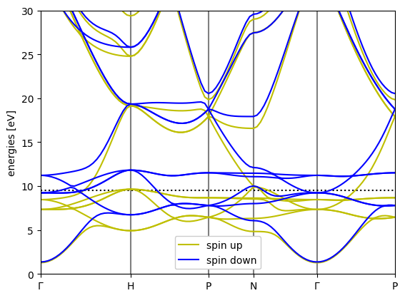
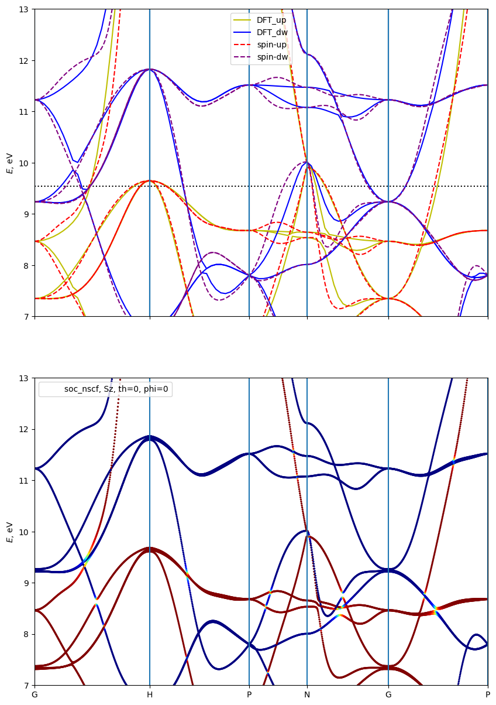
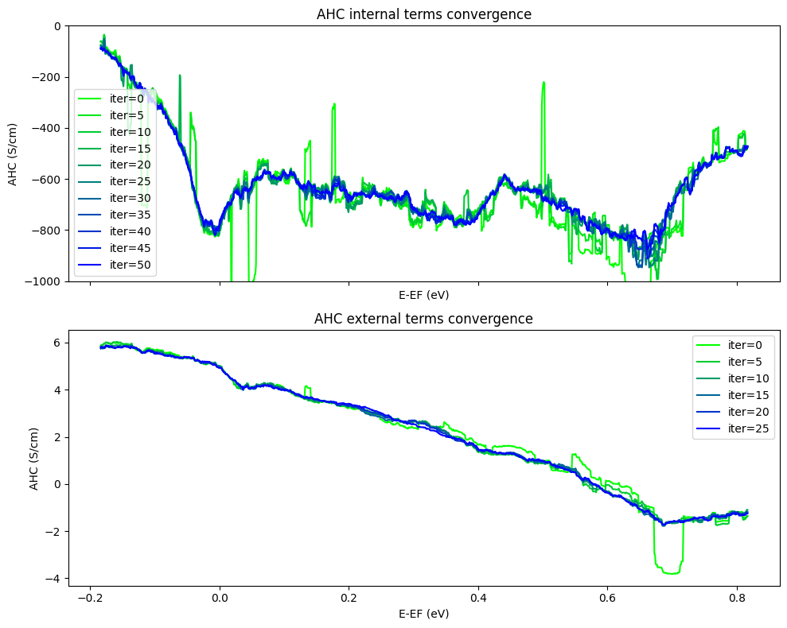
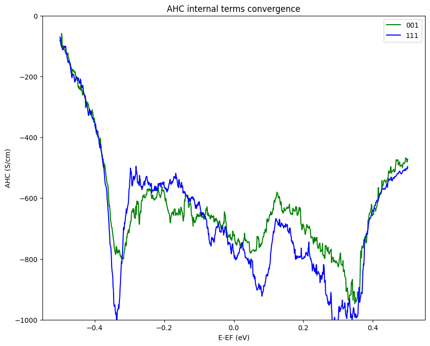

GPAW + WannierBerri: Magnetism and spin-orbit coupling (bcc Fe)
In GPAW the spin-orbit coupling (SOC) is treated non-self-consistently. Therefore, there is no need to add it before wannierization. Instead, we can wannierised the collinear magnetic calculation and then add SOC in the wannierized Hamiltonian. Only after that we can specify the spin axis and compute the bandstructure and other properties (like AHC)
This also has the advantage that the Wannier functions are real (since they respect the time-reversal symmetry which is present in each spin channel separately) and respect all symmetries of the crystal structure, even those which are broken by the magnetization direction.
Prerequisites
Make sure you have installed the following packages:
pip install wannierberri gpaw ase irrep
Setup the parallelization
[1]:
import numpy as np
from ase import Atoms
from gpaw import GPAW, PW, FermiDirac, MixerSum
import ray
ray.init(num_cpus=16)
/home/stepan/github/WannierBerri-tutorial/.conda/lib/python3.12/site-packages/tqdm/auto.py:21: TqdmWarning: IProgress not found. Please update jupyter and ipywidgets. See https://ipywidgets.readthedocs.io/en/stable/user_install.html
from .autonotebook import tqdm as notebook_tqdm
2026-04-02 15:14:55,315 INFO util.py:154 -- Missing packages: ['ipywidgets']. Run `pip install -U ipywidgets`, then restart the notebook server for rich notebook output.
2026-04-02 15:14:57,340 INFO worker.py:1918 -- Started a local Ray instance. View the dashboard at http://127.0.0.1:8265
[1]:
| Python version: | 3.12.12 |
| Ray version: | 2.48.0 |
| Dashboard: | http://127.0.0.1:8265 |
Step 1: Gpaw calculation
loading the GPAW calculators
If you want to skip the GPAW calculation, you can just load the pre-calculated calculators
[3]:
calc_scf = GPAW("gpaw/Fe-scf.gpw")
calc_nscf = GPAW("gpaw/Fe-nscf-irred-444.gpw")
calc_bands = GPAW("gpaw/Fe-bands-path.gpw")
self-consistent calculation
[2]:
a = 2.87 # Angstrom - lattice constant for bcc Fe
m = 2.2 # Bohr magneton - spin magnetic moment per atom
seed = "Fe"
lattice = a * np.array([[1, 1, 1], [-1, 1, 1], [-1, -1, 1]]) / 2
fe = Atoms('Fe',
scaled_positions=[(0, 0, 0)],
magmoms=[m],
cell=lattice,
pbc=True)
calc_scf = GPAW(mode=PW(600),
xc='PBE',
occupations=FermiDirac(width=0.01),
kpts={'size': (8,8,8),},
txt=f'Fe_scf.txt')
fe.calc = calc_scf
e = fe.get_potential_energy()
calc_scf.write(f'{seed}-scf.gpw')
Non-self-consistent calculation in the irreducible Brillouin zone
Now we get the list of irreducible k-points (using irrep.SpaceGroup object) and perform a non-self-consistent calculation only on these k-points. Note, that here we use all symmetries of the crystal structure, even those which are broken by the magnetization direction, because they are still symmetries for each spin channel separately (including the time-reversal symmetry).
[3]:
from irrep.spacegroup import SpaceGroup
sg = SpaceGroup.from_gpaw(calc_scf)
kpoints_irred = sg.get_irreducible_kpoints_grid([4, 4, 4])
calc_nscf = calc_scf.fixed_density(
kpts=kpoints_irred,
nbands=30,
convergence={'bands': 24},
txt=f'{seed}-nscf.txt')
calc_nscf.write(f'{seed}-nscf-irred-444.gpw', mode='all')
typat used for spacegroup detection (accounting magmoms): [26]
Compute the dft bandstructure along a high-symmetry path
This is done to compare with the wannierized bandstructure later.
[5]:
path_str = "GHPNGP"
calc_bands = calc_scf.fixed_density(
nbands=30,
symmetry='off',
random=True,
kpts={'path': path_str, 'npoints': 100},
txt=f'{seed}-bands-path.txt',
convergence={'bands': 24})
calc_bands.write(f'{seed}-bands-path.gpw', mode='all')
[4]:
bs_dft = calc_bands.band_structure()
bs_dft.plot(show=True, emin=0,emax=30.0)

[4]:
<Axes: ylabel='energies [eV]'>
Step 2: Wannierization
In this case we use sp3d2 and t2g projections on each iron atom. One can also use the conventional s,p,d orbitals.
[5]:
from irrep.spacegroup import SpaceGroup
from wannierberri.symmetry.projections import Projection, ProjectionsSet
from gpaw import GPAW
# gpaw_calc = calc_nscf #GPAW( "./Fe-nscf-irred-444.gpw")
sg = SpaceGroup.from_gpaw(calc_nscf)
projection_sp3d2 = Projection(position_num=[0, 0, 0], orbital='sp3d2', spacegroup=sg)
projection_t2g = Projection(position_num=[0, 0, 0], orbital='t2g', spacegroup=sg)
proj_set = ProjectionsSet([projection_sp3d2, projection_t2g])
typat used for spacegroup detection (accounting magmom): [26]
create the “w90 files”
Here we are NOT using the gpaw-wannier90 interface, and actually not creating the w90 files, but directly access the wavefunctions from the GPAW calculation, use symmetry operations from irrep, and create the necessary data to be used with wannierberri. Those files still retain the same naming convention as the w90 files for consistency, but htey are binary npz files, which are convenient to work with numpy
After creating those data, it is written to the disk, so that one can later load it. But be careful - if you change anything (e.g. the projections) - do not forget to remove those files, otherwise you will load the old data! For that reason, here we set ‘read_npz_list=[]’ to force the creation of new data.
[12]:
from wannierberri.w90files.w90data_soc import WannierDataSOC
wandata = WannierDataSOC.from_gpaw(
calculator=calc_nscf,
projections=proj_set,
mp_grid=(4,4,4),
spacegroup=sg,
)
Using 'projections' for both spin up channel.
No projections_down provided; using projections_up for both spin channels.
got irreducible=None, mp_grid=(4, 4, 4), seedname=wannier_soc-spin-0, files=['mmn', 'eig', 'amn', 'symmetrizer'], projections=ProjectionsSet with 9 Wannier functions and 0 free variables
Projection 0, 0, 0:['sp3d2'] with 6 Wannier functions (6 per spin x1 spins)
on 1 points (6 per site)
Projection 0, 0, 0:['t2g'] with 3 Wannier functions (3 per spin x1 spins)
on 1 points (3 per site), unk_grid=None, normalize=True
mpgrid = [4 4 4], 8
detected grid=(np.int64(4), np.int64(4), np.int64(4)), selected_kpoints=[0 1 2 3 4 5 6 7]
self.irreducible=True
mpgrid = [4 4 4], 8
/home/stepan/github/wannier-berri/wannierberri/w90files/wandata.py:128: UserWarning: detected grid (np.int64(4), np.int64(4), np.int64(4)) od 64 kpoints, but only 8 kpoints are available.assuming that only irreducible kpoints are needed.
warnings.warn(f"detected grid {grid} od {np.prod(grid)} kpoints, "
Shells found with weights [0.41728623] and tolerance 1.9302775581455037e-16
Creating amn. Using projections_set
ProjectionsSet with 9 Wannier functions and 0 free variables
Projection 0, 0, 0:['sp3d2'] with 6 Wannier functions (6 per spin x1 spins)
on 1 points (6 per site)
Projection 0, 0, 0:['t2g'] with 3 Wannier functions (3 per spin x1 spins)
on 1 points (3 per site)
NK= 64, selected_kpoints = [0 1 2 3 4 5 6 7], kptirr = [0 1 2 3 4 5 6 7]
got irreducible=None, mp_grid=(4, 4, 4), seedname=wannier_soc-spin-1, files=['mmn', 'eig', 'amn', 'symmetrizer'], projections=ProjectionsSet with 9 Wannier functions and 0 free variables
Projection 0, 0, 0:['sp3d2'] with 6 Wannier functions (6 per spin x1 spins)
on 1 points (6 per site)
Projection 0, 0, 0:['t2g'] with 3 Wannier functions (3 per spin x1 spins)
on 1 points (3 per site), unk_grid=None, normalize=True
mpgrid = [4 4 4], 8
detected grid=(np.int64(4), np.int64(4), np.int64(4)), selected_kpoints=[0 1 2 3 4 5 6 7]
self.irreducible=True
mpgrid = [4 4 4], 8
Creating amn. Using projections_set
ProjectionsSet with 9 Wannier functions and 0 free variables
Projection 0, 0, 0:['sp3d2'] with 6 Wannier functions (6 per spin x1 spins)
on 1 points (6 per site)
Projection 0, 0, 0:['t2g'] with 3 Wannier functions (3 per spin x1 spins)
on 1 points (3 per site)
NK= 64, selected_kpoints = [0 1 2 3 4 5 6 7], kptirr = [0 1 2 3 4 5 6 7]
number of bands = 30
Do the wannierization
at this step we also specify the frozen window, number of iterations, and whether to use site symmetry and localization. (when starting from irreducible BZ, site-symmetry is required anyway)
We also may use the outer window via w90data.select_bands if needed
In this case, both spin channels will be wannierised separately, starting from the same projections.There is also an option to specify different projections for different spin channels if needed. (See MnTe tutorial)
[13]:
wandata.wannierise(
froz_min=-100,
froz_max=20,
outer_min=-100,
outer_max=np.inf,
num_iter=100,
print_progress_every=10,
sitesym=True,
localise=True,
)
Warning: symmetrization did not converge in 10 iterations, final changes 0.0007259249282591863, 5.982527151401849e-07; probably the input data are not perfectly symmetrizable, or the provided projections are notcompatible with the irreps of the DFT bands.
####################################################################################################
starting WFs
----------------------------------------------------------------------------------------------------
wannier centers and spreads
----------------------------------------------------------------------------------------------------
-0.657505888509 0.000000000000 0.000000000000 | 2.258152980851
0.657505888509 -0.000000000000 -0.000000000000 | 2.258152980851
0.000000000000 -0.657505888509 -0.000000000000 | 2.258152980851
-0.000000000000 0.657505888509 0.000000000000 | 2.258152980851
-0.000000000000 -0.000000000000 -0.657505888509 | 2.258152980851
0.000000000000 0.000000000000 0.657505888509 | 2.258152980851
0.000000000000 0.000000000000 0.000000000000 | 0.603083260481
0.000000000000 0.000000000000 0.000000000000 | 0.603083260481
0.000000000000 0.000000000000 0.000000000000 | 0.603083260481
----------------------------------------------------------------------------------------------------
-0.000000000000 0.000000000000 0.000000000000 | 15.358167666549 <- sum
maximal spread = 2.258152980851
####################################################################################################
####################################################################################################
Iteration 0 (from wannierizer)
----------------------------------------------------------------------------------------------------
wannier centers and spreads
----------------------------------------------------------------------------------------------------
-0.666869542301 0.000000000000 0.000000000000 | 1.852804712474
0.666869542301 -0.000000000000 -0.000000000000 | 1.852804712474
0.000000000000 -0.666869542301 -0.000000000000 | 1.852804712474
-0.000000000000 0.666869542301 0.000000000000 | 1.852804712474
0.000000000000 0.000000000000 -0.666869542301 | 1.852804712474
-0.000000000000 -0.000000000000 0.666869542301 | 1.852804712474
0.000000000000 0.000000000000 0.000000000000 | 0.515034656887
0.000000000000 0.000000000000 0.000000000000 | 0.515034656887
0.000000000000 0.000000000000 0.000000000000 | 0.515034656887
----------------------------------------------------------------------------------------------------
0.000000000000 0.000000000000 -0.000000000000 | 12.661932245509 <- sum
maximal spread = 1.852804712474
standard deviation = 0.0
####################################################################################################
####################################################################################################
Iteration 10 (from wannierizer)
----------------------------------------------------------------------------------------------------
wannier centers and spreads
----------------------------------------------------------------------------------------------------
-0.682160353299 0.000000000000 0.000000000000 | 0.735893941167
0.682160353299 -0.000000000000 -0.000000000000 | 0.735893941167
-0.000000000000 -0.682160353299 0.000000000000 | 0.735893941167
0.000000000000 0.682160353299 -0.000000000000 | 0.735893941167
0.000000000000 0.000000000000 -0.682160353299 | 0.735893941167
-0.000000000000 -0.000000000000 0.682160353299 | 0.735893941167
0.000000000000 0.000000000000 0.000000000000 | 0.306621019134
0.000000000000 0.000000000000 0.000000000000 | 0.306621019134
0.000000000000 0.000000000000 0.000000000000 | 0.306621019134
----------------------------------------------------------------------------------------------------
-0.000000000000 -0.000000000000 0.000000000000 | 5.335226704404 <- sum
maximal spread = 0.735893941167
standard deviation = 0.004899953733654522
####################################################################################################
####################################################################################################
Iteration 20 (from wannierizer)
----------------------------------------------------------------------------------------------------
wannier centers and spreads
----------------------------------------------------------------------------------------------------
-0.678571254686 0.000000000000 0.000000000000 | 0.707686078776
0.678571254686 0.000000000000 0.000000000000 | 0.707686078776
-0.000000000000 -0.678571254686 0.000000000000 | 0.707686078776
-0.000000000000 0.678571254686 0.000000000000 | 0.707686078776
0.000000000000 0.000000000000 -0.678571254686 | 0.707686078776
-0.000000000000 -0.000000000000 0.678571254686 | 0.707686078776
0.000000000000 0.000000000000 0.000000000000 | 0.299495148259
0.000000000000 0.000000000000 0.000000000000 | 0.299495148259
0.000000000000 0.000000000000 0.000000000000 | 0.299495148259
----------------------------------------------------------------------------------------------------
-0.000000000000 0.000000000000 0.000000000000 | 5.144601917436 <- sum
maximal spread = 0.707686078776
standard deviation = 0.001579164979462901
####################################################################################################
####################################################################################################
Iteration 30 (from wannierizer)
----------------------------------------------------------------------------------------------------
wannier centers and spreads
----------------------------------------------------------------------------------------------------
-0.676216226086 -0.000000000000 -0.000000000000 | 0.694167987173
0.676216226086 -0.000000000000 -0.000000000000 | 0.694167987173
-0.000000000000 -0.676216226086 0.000000000000 | 0.694167987173
0.000000000000 0.676216226086 -0.000000000000 | 0.694167987173
0.000000000000 0.000000000000 -0.676216226086 | 0.694167987173
-0.000000000000 -0.000000000000 0.676216226086 | 0.694167987173
0.000000000000 0.000000000000 0.000000000000 | 0.296059611254
0.000000000000 0.000000000000 0.000000000000 | 0.296059611254
0.000000000000 0.000000000000 0.000000000000 | 0.296059611254
----------------------------------------------------------------------------------------------------
-0.000000000000 -0.000000000000 -0.000000000000 | 5.053186756801 <- sum
maximal spread = 0.694167987173
standard deviation = 0.0008641626785000128
####################################################################################################
####################################################################################################
Iteration 40 (from wannierizer)
----------------------------------------------------------------------------------------------------
wannier centers and spreads
----------------------------------------------------------------------------------------------------
-0.674350383985 0.000000000000 0.000000000000 | 0.686394726367
0.674350383985 -0.000000000000 -0.000000000000 | 0.686394726367
-0.000000000000 -0.674350383985 0.000000000000 | 0.686394726367
0.000000000000 0.674350383985 -0.000000000000 | 0.686394726367
0.000000000000 0.000000000000 -0.674350383985 | 0.686394726367
-0.000000000000 -0.000000000000 0.674350383985 | 0.686394726367
0.000000000000 0.000000000000 0.000000000000 | 0.294119365321
0.000000000000 0.000000000000 0.000000000000 | 0.294119365321
0.000000000000 0.000000000000 0.000000000000 | 0.294119365321
----------------------------------------------------------------------------------------------------
-0.000000000000 0.000000000000 0.000000000000 | 5.000726454162 <- sum
maximal spread = 0.686394726367
standard deviation = 0.0005107475356008293
####################################################################################################
####################################################################################################
Iteration 50 (from wannierizer)
----------------------------------------------------------------------------------------------------
wannier centers and spreads
----------------------------------------------------------------------------------------------------
-0.672971535263 0.000000000000 0.000000000000 | 0.681692023160
0.672971535263 -0.000000000000 -0.000000000000 | 0.681692023160
-0.000000000000 -0.672971535263 0.000000000000 | 0.681692023160
0.000000000000 0.672971535263 -0.000000000000 | 0.681692023160
0.000000000000 0.000000000000 -0.672971535263 | 0.681692023160
-0.000000000000 -0.000000000000 0.672971535263 | 0.681692023160
0.000000000000 0.000000000000 0.000000000000 | 0.292930987170
0.000000000000 0.000000000000 0.000000000000 | 0.292930987170
0.000000000000 0.000000000000 0.000000000000 | 0.292930987170
----------------------------------------------------------------------------------------------------
0.000000000000 -0.000000000000 -0.000000000000 | 4.968945100473 <- sum
maximal spread = 0.681692023160
standard deviation = 0.0003139892639872445
####################################################################################################
####################################################################################################
Iteration 60 (from wannierizer)
----------------------------------------------------------------------------------------------------
wannier centers and spreads
----------------------------------------------------------------------------------------------------
-0.671995228882 0.000000000000 0.000000000000 | 0.678752581817
0.671995228882 -0.000000000000 -0.000000000000 | 0.678752581817
-0.000000000000 -0.671995228882 0.000000000000 | 0.678752581817
0.000000000000 0.671995228882 -0.000000000000 | 0.678752581817
0.000000000000 0.000000000000 -0.671995228882 | 0.678752581817
-0.000000000000 -0.000000000000 0.671995228882 | 0.678752581817
0.000000000000 0.000000000000 0.000000000000 | 0.292173005005
0.000000000000 0.000000000000 0.000000000000 | 0.292173005005
0.000000000000 0.000000000000 0.000000000000 | 0.292173005005
----------------------------------------------------------------------------------------------------
-0.000000000000 -0.000000000000 0.000000000000 | 4.949034505915 <- sum
maximal spread = 0.678752581817
standard deviation = 0.00019854641477542851
####################################################################################################
####################################################################################################
Iteration 70 (from wannierizer)
----------------------------------------------------------------------------------------------------
wannier centers and spreads
----------------------------------------------------------------------------------------------------
-0.671318846435 -0.000000000000 -0.000000000000 | 0.676871266017
0.671318846435 0.000000000000 0.000000000000 | 0.676871266017
-0.000000000000 -0.671318846435 0.000000000000 | 0.676871266017
0.000000000000 0.671318846435 -0.000000000000 | 0.676871266017
0.000000000000 0.000000000000 -0.671318846435 | 0.676871266017
-0.000000000000 -0.000000000000 0.671318846435 | 0.676871266017
0.000000000000 0.000000000000 0.000000000000 | 0.291678866222
0.000000000000 0.000000000000 0.000000000000 | 0.291678866222
0.000000000000 0.000000000000 0.000000000000 | 0.291678866222
----------------------------------------------------------------------------------------------------
-0.000000000000 -0.000000000000 0.000000000000 | 4.936264194770 <- sum
maximal spread = 0.676871266017
standard deviation = 0.00012813343536123234
####################################################################################################
####################################################################################################
Iteration 80 (from wannierizer)
----------------------------------------------------------------------------------------------------
wannier centers and spreads
----------------------------------------------------------------------------------------------------
-0.670855543506 -0.000000000000 -0.000000000000 | 0.675646712368
0.670855543506 0.000000000000 0.000000000000 | 0.675646712368
-0.000000000000 -0.670855543506 0.000000000000 | 0.675646712368
0.000000000000 0.670855543506 -0.000000000000 | 0.675646712368
0.000000000000 0.000000000000 -0.670855543506 | 0.675646712368
-0.000000000000 -0.000000000000 0.670855543506 | 0.675646712368
0.000000000000 0.000000000000 0.000000000000 | 0.291352637099
0.000000000000 0.000000000000 0.000000000000 | 0.291352637099
0.000000000000 0.000000000000 0.000000000000 | 0.291352637099
----------------------------------------------------------------------------------------------------
-0.000000000000 0.000000000000 0.000000000000 | 4.927938185507 <- sum
maximal spread = 0.675646712368
standard deviation = 8.388676291880649e-05
####################################################################################################
####################################################################################################
Iteration 90 (from wannierizer)
----------------------------------------------------------------------------------------------------
wannier centers and spreads
----------------------------------------------------------------------------------------------------
-0.670540138047 0.000000000000 0.000000000000 | 0.674840258441
0.670540138047 -0.000000000000 -0.000000000000 | 0.674840258441
0.000000000000 -0.670540138047 -0.000000000000 | 0.674840258441
-0.000000000000 0.670540138047 0.000000000000 | 0.674840258441
-0.000000000000 -0.000000000000 -0.670540138047 | 0.674840258441
0.000000000000 0.000000000000 0.670540138047 | 0.674840258441
0.000000000000 0.000000000000 0.000000000000 | 0.291135591591
0.000000000000 0.000000000000 0.000000000000 | 0.291135591591
0.000000000000 0.000000000000 0.000000000000 | 0.291135591591
----------------------------------------------------------------------------------------------------
-0.000000000000 -0.000000000000 -0.000000000000 | 4.922448325419 <- sum
maximal spread = 0.674840258441
standard deviation = 5.546503559859722e-05
####################################################################################################
####################################################################################################
Final state (from wannierizer)
----------------------------------------------------------------------------------------------------
wannier centers and spreads
----------------------------------------------------------------------------------------------------
-0.670344000746 -0.000000000000 -0.000000000000 | 0.674349182222
0.670344000746 -0.000000000000 -0.000000000000 | 0.674349182222
0.000000000000 -0.670344000746 -0.000000000000 | 0.674349182222
-0.000000000000 0.670344000746 0.000000000000 | 0.674349182222
-0.000000000000 -0.000000000000 -0.670344000746 | 0.674349182222
0.000000000000 0.000000000000 0.670344000746 | 0.674349182222
0.000000000000 0.000000000000 0.000000000000 | 0.291002516619
0.000000000000 0.000000000000 0.000000000000 | 0.291002516619
0.000000000000 0.000000000000 0.000000000000 | 0.291002516619
----------------------------------------------------------------------------------------------------
-0.000000000000 -0.000000000000 -0.000000000000 | 4.919102643190 <- sum
maximal spread = 0.674349182222
standard deviation = 3.844528868226569e-05
####################################################################################################
time for creating wannierizer 0.45577573776245117
time for iterations 5.177273273468018
time for updating 4.744738340377808
total time for wannierization 6.284714460372925
saving to wannier_soc-spin-0.chk :
Warning: symmetrization did not converge in 10 iterations, final changes 0.0002448539185698427, 7.001454917754468e-08; probably the input data are not perfectly symmetrizable, or the provided projections are notcompatible with the irreps of the DFT bands.
Warning: symmetrization did not converge in 10 iterations, final changes 0.0010391041716748945, 3.5000959441807944e-06; probably the input data are not perfectly symmetrizable, or the provided projections are notcompatible with the irreps of the DFT bands.
####################################################################################################
starting WFs
----------------------------------------------------------------------------------------------------
wannier centers and spreads
----------------------------------------------------------------------------------------------------
-0.643644758602 0.000000000000 0.000000000000 | 2.070720960043
0.643644758602 -0.000000000000 -0.000000000000 | 2.070720960043
-0.000000000000 -0.643644758602 0.000000000000 | 2.070720960043
-0.000000000000 0.643644758602 0.000000000000 | 2.070720960043
0.000000000000 0.000000000000 -0.643644758602 | 2.070720960043
-0.000000000000 -0.000000000000 0.643644758602 | 2.070720960043
0.000000000000 0.000000000000 0.000000000000 | 0.601832338040
0.000000000000 0.000000000000 0.000000000000 | 0.601832338040
0.000000000000 0.000000000000 0.000000000000 | 0.601832338040
----------------------------------------------------------------------------------------------------
0.000000000000 0.000000000000 0.000000000000 | 14.229822774379 <- sum
maximal spread = 2.070720960043
####################################################################################################
####################################################################################################
Iteration 0 (from wannierizer)
----------------------------------------------------------------------------------------------------
wannier centers and spreads
----------------------------------------------------------------------------------------------------
-0.663037280264 0.000000000000 0.000000000000 | 1.911382049587
0.663037280264 -0.000000000000 -0.000000000000 | 1.911382049587
0.000000000000 -0.663037280264 -0.000000000000 | 1.911382049587
-0.000000000000 0.663037280264 0.000000000000 | 1.911382049587
-0.000000000000 -0.000000000000 -0.663037280264 | 1.911382049587
-0.000000000000 -0.000000000000 0.663037280264 | 1.911382049587
0.000000000000 0.000000000000 0.000000000000 | 0.534561848711
0.000000000000 0.000000000000 0.000000000000 | 0.534561848711
0.000000000000 0.000000000000 0.000000000000 | 0.534561848711
----------------------------------------------------------------------------------------------------
-0.000000000000 0.000000000000 0.000000000000 | 13.071977843658 <- sum
maximal spread = 1.911382049587
standard deviation = 0.0
####################################################################################################
####################################################################################################
Iteration 10 (from wannierizer)
----------------------------------------------------------------------------------------------------
wannier centers and spreads
----------------------------------------------------------------------------------------------------
-0.716763066927 0.000000000000 0.000000000000 | 0.741794589240
0.716763066927 -0.000000000000 -0.000000000000 | 0.741794589240
-0.000000000000 -0.716763066927 0.000000000000 | 0.741794589240
0.000000000000 0.716763066927 -0.000000000000 | 0.741794589240
0.000000000000 0.000000000000 -0.716763066927 | 0.741794589240
-0.000000000000 -0.000000000000 0.716763066927 | 0.741794589240
0.000000000000 0.000000000000 0.000000000000 | 0.356094678647
0.000000000000 0.000000000000 0.000000000000 | 0.356094678647
0.000000000000 0.000000000000 0.000000000000 | 0.356094678647
----------------------------------------------------------------------------------------------------
0.000000000000 0.000000000000 0.000000000000 | 5.519051571380 <- sum
maximal spread = 0.741794589240
standard deviation = 0.011051477619476708
####################################################################################################
####################################################################################################
Iteration 20 (from wannierizer)
----------------------------------------------------------------------------------------------------
wannier centers and spreads
----------------------------------------------------------------------------------------------------
-0.709826805030 -0.000000000000 -0.000000000000 | 0.708235796615
0.709826805030 0.000000000000 0.000000000000 | 0.708235796615
-0.000000000000 -0.709826805030 0.000000000000 | 0.708235796615
0.000000000000 0.709826805030 -0.000000000000 | 0.708235796615
-0.000000000000 -0.000000000000 -0.709826805030 | 0.708235796615
0.000000000000 0.000000000000 0.709826805030 | 0.708235796615
0.000000000000 0.000000000000 0.000000000000 | 0.345043489877
0.000000000000 0.000000000000 0.000000000000 | 0.345043489877
0.000000000000 0.000000000000 0.000000000000 | 0.345043489877
----------------------------------------------------------------------------------------------------
0.000000000000 0.000000000000 -0.000000000000 | 5.284545249319 <- sum
maximal spread = 0.708235796615
standard deviation = 0.001543383726307693
####################################################################################################
####################################################################################################
Iteration 30 (from wannierizer)
----------------------------------------------------------------------------------------------------
wannier centers and spreads
----------------------------------------------------------------------------------------------------
-0.707048239895 0.000000000000 0.000000000000 | 0.695457796030
0.707048239895 -0.000000000000 -0.000000000000 | 0.695457796030
0.000000000000 -0.707048239895 -0.000000000000 | 0.695457796030
-0.000000000000 0.707048239895 0.000000000000 | 0.695457796030
0.000000000000 0.000000000000 -0.707048239895 | 0.695457796030
-0.000000000000 -0.000000000000 0.707048239895 | 0.695457796030
0.000000000000 0.000000000000 0.000000000000 | 0.340064937802
0.000000000000 0.000000000000 0.000000000000 | 0.340064937802
0.000000000000 0.000000000000 0.000000000000 | 0.340064937802
----------------------------------------------------------------------------------------------------
-0.000000000000 0.000000000000 0.000000000000 | 5.192941589587 <- sum
maximal spread = 0.695457796030
standard deviation = 0.0008088136988548999
####################################################################################################
####################################################################################################
Iteration 40 (from wannierizer)
----------------------------------------------------------------------------------------------------
wannier centers and spreads
----------------------------------------------------------------------------------------------------
-0.705252210528 -0.000000000000 -0.000000000000 | 0.688182632188
0.705252210528 0.000000000000 0.000000000000 | 0.688182632188
0.000000000000 -0.705252210528 -0.000000000000 | 0.688182632188
-0.000000000000 0.705252210528 0.000000000000 | 0.688182632188
0.000000000000 0.000000000000 -0.705252210528 | 0.688182632188
0.000000000000 0.000000000000 0.705252210528 | 0.688182632188
0.000000000000 0.000000000000 0.000000000000 | 0.337291747752
0.000000000000 0.000000000000 0.000000000000 | 0.337291747752
0.000000000000 0.000000000000 0.000000000000 | 0.337291747752
----------------------------------------------------------------------------------------------------
0.000000000000 0.000000000000 0.000000000000 | 5.140971036384 <- sum
maximal spread = 0.688182632188
standard deviation = 0.00047843354514149933
####################################################################################################
####################################################################################################
Iteration 50 (from wannierizer)
----------------------------------------------------------------------------------------------------
wannier centers and spreads
----------------------------------------------------------------------------------------------------
-0.704006584607 0.000000000000 0.000000000000 | 0.683776742059
0.704006584607 -0.000000000000 -0.000000000000 | 0.683776742059
-0.000000000000 -0.704006584607 0.000000000000 | 0.683776742059
0.000000000000 0.704006584607 -0.000000000000 | 0.683776742059
0.000000000000 0.000000000000 -0.704006584607 | 0.683776742059
-0.000000000000 -0.000000000000 0.704006584607 | 0.683776742059
0.000000000000 0.000000000000 0.000000000000 | 0.335610845366
0.000000000000 0.000000000000 0.000000000000 | 0.335610845366
0.000000000000 0.000000000000 0.000000000000 | 0.335610845366
----------------------------------------------------------------------------------------------------
-0.000000000000 -0.000000000000 0.000000000000 | 5.109492988455 <- sum
maximal spread = 0.683776742059
standard deviation = 0.00029399741695972423
####################################################################################################
####################################################################################################
Iteration 60 (from wannierizer)
----------------------------------------------------------------------------------------------------
wannier centers and spreads
----------------------------------------------------------------------------------------------------
-0.703150214100 -0.000000000000 -0.000000000000 | 0.681031309560
0.703150214100 0.000000000000 0.000000000000 | 0.681031309560
0.000000000000 -0.703150214100 -0.000000000000 | 0.681031309560
-0.000000000000 0.703150214100 0.000000000000 | 0.681031309560
-0.000000000000 -0.000000000000 -0.703150214100 | 0.681031309560
0.000000000000 0.000000000000 0.703150214100 | 0.681031309560
0.000000000000 0.000000000000 0.000000000000 | 0.334549964664
0.000000000000 0.000000000000 0.000000000000 | 0.334549964664
0.000000000000 0.000000000000 0.000000000000 | 0.334549964664
----------------------------------------------------------------------------------------------------
0.000000000000 0.000000000000 0.000000000000 | 5.089837751355 <- sum
maximal spread = 0.681031309560
standard deviation = 0.00018497507841339726
####################################################################################################
####################################################################################################
Iteration 70 (from wannierizer)
----------------------------------------------------------------------------------------------------
wannier centers and spreads
----------------------------------------------------------------------------------------------------
-0.702568505377 0.000000000000 0.000000000000 | 0.679286364978
0.702568505377 0.000000000000 0.000000000000 | 0.679286364978
-0.000000000000 -0.702568505377 0.000000000000 | 0.679286364978
0.000000000000 0.702568505377 -0.000000000000 | 0.679286364978
-0.000000000000 -0.000000000000 -0.702568505377 | 0.679286364978
0.000000000000 0.000000000000 0.702568505377 | 0.679286364978
0.000000000000 0.000000000000 0.000000000000 | 0.333865822709
0.000000000000 0.000000000000 0.000000000000 | 0.333865822709
0.000000000000 0.000000000000 0.000000000000 | 0.333865822709
----------------------------------------------------------------------------------------------------
-0.000000000000 0.000000000000 0.000000000000 | 5.077315657994 <- sum
maximal spread = 0.679286364978
standard deviation = 0.00011839563993101135
####################################################################################################
####################################################################################################
Iteration 80 (from wannierizer)
----------------------------------------------------------------------------------------------------
wannier centers and spreads
----------------------------------------------------------------------------------------------------
-0.702176530469 0.000000000000 0.000000000000 | 0.678161268346
0.702176530469 -0.000000000000 -0.000000000000 | 0.678161268346
0.000000000000 -0.702176530469 -0.000000000000 | 0.678161268346
-0.000000000000 0.702176530469 0.000000000000 | 0.678161268346
0.000000000000 0.000000000000 -0.702176530469 | 0.678161268346
-0.000000000000 -0.000000000000 0.702176530469 | 0.678161268346
0.000000000000 0.000000000000 0.000000000000 | 0.333419242383
0.000000000000 0.000000000000 0.000000000000 | 0.333419242383
0.000000000000 0.000000000000 0.000000000000 | 0.333419242383
----------------------------------------------------------------------------------------------------
0.000000000000 0.000000000000 0.000000000000 | 5.069225337225 <- sum
maximal spread = 0.678161268346
standard deviation = 7.672219731855944e-05
####################################################################################################
####################################################################################################
Iteration 90 (from wannierizer)
----------------------------------------------------------------------------------------------------
wannier centers and spreads
----------------------------------------------------------------------------------------------------
-0.701913691916 0.000000000000 0.000000000000 | 0.677428418390
0.701913691916 -0.000000000000 -0.000000000000 | 0.677428418390
0.000000000000 -0.701913691916 -0.000000000000 | 0.677428418390
-0.000000000000 0.701913691916 0.000000000000 | 0.677428418390
-0.000000000000 -0.000000000000 -0.701913691916 | 0.677428418390
0.000000000000 0.000000000000 0.701913691916 | 0.677428418390
0.000000000000 0.000000000000 0.000000000000 | 0.333125642275
0.000000000000 0.000000000000 0.000000000000 | 0.333125642275
0.000000000000 0.000000000000 0.000000000000 | 0.333125642275
----------------------------------------------------------------------------------------------------
-0.000000000000 -0.000000000000 0.000000000000 | 5.063947437166 <- sum
maximal spread = 0.677428418390
standard deviation = 5.0148631658235396e-05
####################################################################################################
####################################################################################################
Final state (from wannierizer)
----------------------------------------------------------------------------------------------------
wannier centers and spreads
----------------------------------------------------------------------------------------------------
-0.701752515123 0.000000000000 0.000000000000 | 0.676987236880
0.701752515123 0.000000000000 0.000000000000 | 0.676987236880
-0.000000000000 -0.701752515123 0.000000000000 | 0.676987236880
0.000000000000 0.701752515123 -0.000000000000 | 0.676987236880
0.000000000000 0.000000000000 -0.701752515123 | 0.676987236880
0.000000000000 0.000000000000 0.701752515123 | 0.676987236880
0.000000000000 0.000000000000 0.000000000000 | 0.332947759729
0.000000000000 0.000000000000 0.000000000000 | 0.332947759729
0.000000000000 0.000000000000 0.000000000000 | 0.332947759729
----------------------------------------------------------------------------------------------------
0.000000000000 0.000000000000 0.000000000000 | 5.060766700471 <- sum
maximal spread = 0.676987236880
standard deviation = 3.437864254526713e-05
####################################################################################################
time for creating wannierizer 0.45185112953186035
time for iterations 5.693344354629517
time for updating 5.254478693008423
total time for wannierization 6.832508087158203
saving to wannier_soc-spin-1.chk :
Create the System object to be used in WannierBerri calculations
It is called “System_w90” class, although it now does not use the w90 wannierization, but the class is the same.
Unlike the non-SOC systems, here we also specify the direction of the magnetization. We can later easily chanbge this direction without redoing the wannierization.
[14]:
from wannierberri.system.system_soc import SystemSOC
theta = 0
phi = 0
system_soc = SystemSOC.from_wannierdata(wandata=wandata, berry=True, silent=False)
system_soc.set_soc_axis(theta=theta, phi=phi, alpha_soc=1.0)
system_soc.save_npz("system_soc")
irreducible : True, symmetrize set to True
setting Rvec
setting AA..
setting AA - OK
Real-space lattice:
[[ 1.435 1.435 1.435]
[-1.435 1.435 1.435]
[-1.435 -1.435 1.435]]
Number of wannier functions: 9
Number of R points: 89
Recommended size of FFT grid [4 4 4]
num_blocks_left = 2, num_blocks_right = 2
number o R-vectors before symmetrization: 89
number o R-vectors after symmetrization: 89
irreducible : True, symmetrize set to True
setting Rvec
setting AA..
setting AA - OK
Real-space lattice:
[[ 1.435 1.435 1.435]
[-1.435 1.435 1.435]
[-1.435 -1.435 1.435]]
Number of wannier functions: 9
Number of R points: 89
Recommended size of FFT grid [4 4 4]
num_blocks_left = 2, num_blocks_right = 2
number o R-vectors before symmetrization: 89
number o R-vectors after symmetrization: 89
/home/stepan/github/wannier-berri/wannierberri/utility.py:57: UserWarning: usually need to provide either with real or reciprocal lattice.If you only want to generate a random symmetric tensor - that it fine
warnings.warn("usually need to provide either with real or reciprocal lattice."
nspin in SOC: 2
setting Rvec
using magmoms
[[0. 0. 2.21212609]]
num_blocks_left = 2, num_blocks_right = 2
num_blocks_left = 2, num_blocks_right = 2
num_blocks_left = 2, num_blocks_right = 2
using magmoms
[[0. 0. 2.21212609]]
using magmoms
[[0. 0. 2.21212609]]
Saving SystemSOC to system_soc
saving system of class SystemSOC to system_soc
properties: ['num_wann', 'real_lattice', 'iRvec', 'periodic', 'is_phonon', 'wannier_centers_cart', 'pointgroup', 'cell']
saving num_wann to system_soc/num_wann.npz
saving real_lattice to system_soc/real_lattice.npz
saving iRvec to system_soc/iRvec.npz
saving periodic to system_soc/periodic.npz
saving is_phonon to system_soc/is_phonon.npz
saving wannier_centers_cart to system_soc/wannier_centers_cart.npz
saving pointgroup to system_soc/pointgroup.npz
saving cell to system_soc/cell.npz
saving system of class System_R to system_soc/system_up
properties: ['num_wann', 'real_lattice', 'iRvec', 'periodic', 'is_phonon', 'wannier_centers_cart', 'pointgroup']
saving num_wann
saving num_wann to system_soc/system_up/num_wann.npz
- Ok!
saving real_lattice
saving real_lattice to system_soc/system_up/real_lattice.npz
- Ok!
saving iRvec
saving iRvec to system_soc/system_up/iRvec.npz
- Ok!
saving periodic
saving periodic to system_soc/system_up/periodic.npz
- Ok!
saving is_phonon
saving is_phonon to system_soc/system_up/is_phonon.npz
- Ok!
saving wannier_centers_cart
saving wannier_centers_cart to system_soc/system_up/wannier_centers_cart.npz
- Ok!
saving pointgroup
saving pointgroup to system_soc/system_up/pointgroup.npz
- Ok!
saving Ham - Ok!
saving AA - Ok!
saving system of class System_R to system_soc/system_down
properties: ['num_wann', 'real_lattice', 'iRvec', 'periodic', 'is_phonon', 'wannier_centers_cart', 'pointgroup']
saving num_wann
saving num_wann to system_soc/system_down/num_wann.npz
- Ok!
saving real_lattice
saving real_lattice to system_soc/system_down/real_lattice.npz
- Ok!
saving iRvec
saving iRvec to system_soc/system_down/iRvec.npz
- Ok!
saving periodic
saving periodic to system_soc/system_down/periodic.npz
- Ok!
saving is_phonon
saving is_phonon to system_soc/system_down/is_phonon.npz
- Ok!
saving wannier_centers_cart
saving wannier_centers_cart to system_soc/system_down/wannier_centers_cart.npz
- Ok!
saving pointgroup
saving pointgroup to system_soc/system_down/pointgroup.npz
- Ok!
saving Ham - Ok!
saving AA - Ok!
Compute the wannierized bandstructure with SOC along the high-symmetry path
[16]:
from wannierberri.grid import Path
from wannierberri.evaluate_k import evaluate_k_path
# from wannierberri.system.system_soc import SystemSOC
# system_soc = SystemSOC.from_npz("system_soc")
points = {"G": [0.0, 0.0, 0.0],
"H": [0.5, -0.5, -0.5],
"P": [0.75, 0.25, -0.25],
"N": [0.5, 0.0, -0.5],
}
path_str = "GHPNGP"
path = Path.from_nodes(real_lattice=system_soc.real_lattice,
nodes=[points[p] for p in path_str],
labels=[p for p in path_str],
length=1000) # length [ Ang] ~= 2*pi/dk
bands_wannier_soc= evaluate_k_path(system_soc, path=path, quantities=["spin"])
bands_wannier_up = evaluate_k_path(system_soc.system_up, path=path)
bands_wannier_dw = evaluate_k_path(system_soc.system_down, path=path)
Starting run()
Using the follwing calculators :
############################################################
'tabulate' : <wannierberri.calculators.tabulate.TabulatorAll object at 0x7d6b93e1aa50> :
TabulatorAll - a pack of all k-resolved calculators (Tabulators)
Includes the following tabulators :
--------------------------------------------------
"spin" : <wannierberri.calculators.tabulate.Spin object at 0x7d6b965b6d80> : Spin expectation :math:` \langle u | \mathbf{\sigma} | u \rangle`
"Energy" : <wannierberri.calculators.tabulate.Energy object at 0x7d6b95df0890> : calculator not described
--------------------------------------------------
############################################################
Calculation along a path - checking calculators for compatibility
tabulate <wannierberri.calculators.tabulate.TabulatorAll object at 0x7d6b93e1aa50>
All calculators are compatible
Symmetrization switched off for Path
Grid is regular
The set of k points is a Path() with 1373 points and labels {0: 'G', 348: 'H', 650: 'P', 824: 'N', 1070: 'G', 1372: 'P'}
generating K_list
Done
Done, sum of weights:1373.0
############################################################
Iteration 0 out of 0
processing 1373 K points : using 16 processes.
# K-points calculated Wall time (sec) Est. remaining (sec) Est. total (sec)
/home/stepan/github/wannier-berri/wannierberri/grid/path.py:272: UserWarning: symmetry is not used for a tabulation along path
warnings.warn("symmetry is not used for a tabulation along path")
880 5.1 2.8 7.9
time for processing 1373 K-points on 16 processes: 8.4670 ; per K-point 0.0062 ; proc-sec per K-point 0.0987
time1 = 4.76837158203125e-07
Totally processed 1373 K-points
run() finished
Starting run()
Using the follwing calculators :
############################################################
'tabulate' : <wannierberri.calculators.tabulate.TabulatorAll object at 0x7d6de86e94f0> :
TabulatorAll - a pack of all k-resolved calculators (Tabulators)
Includes the following tabulators :
--------------------------------------------------
"Energy" : <wannierberri.calculators.tabulate.Energy object at 0x7d6b93f282c0> : calculator not described
--------------------------------------------------
############################################################
Calculation along a path - checking calculators for compatibility
tabulate <wannierberri.calculators.tabulate.TabulatorAll object at 0x7d6de86e94f0>
All calculators are compatible
Symmetrization switched off for Path
Grid is regular
The set of k points is a Path() with 1373 points and labels {0: 'G', 348: 'H', 650: 'P', 824: 'N', 1070: 'G', 1372: 'P'}
generating K_list
Done
Done, sum of weights:1373.0
############################################################
Iteration 0 out of 0
processing 1373 K points : using 16 processes.
# K-points calculated Wall time (sec) Est. remaining (sec) Est. total (sec)
1152 5.1 1.0 6.0
time for processing 1373 K-points on 16 processes: 6.6755 ; per K-point 0.0049 ; proc-sec per K-point 0.0778
time1 = 2.384185791015625e-07
Totally processed 1373 K-points
run() finished
Starting run()
Using the follwing calculators :
############################################################
'tabulate' : <wannierberri.calculators.tabulate.TabulatorAll object at 0x7d6de86e94f0> :
TabulatorAll - a pack of all k-resolved calculators (Tabulators)
Includes the following tabulators :
--------------------------------------------------
"Energy" : <wannierberri.calculators.tabulate.Energy object at 0x7d6b934fc2c0> : calculator not described
--------------------------------------------------
############################################################
Calculation along a path - checking calculators for compatibility
tabulate <wannierberri.calculators.tabulate.TabulatorAll object at 0x7d6de86e94f0>
All calculators are compatible
Symmetrization switched off for Path
Grid is regular
The set of k points is a Path() with 1373 points and labels {0: 'G', 348: 'H', 650: 'P', 824: 'N', 1070: 'G', 1372: 'P'}
generating K_list
Done
Done, sum of weights:1373.0
############################################################
Iteration 0 out of 0
processing 1373 K points : using 16 processes.
# K-points calculated Wall time (sec) Est. remaining (sec) Est. total (sec)
1184 5.1 0.8 5.9
time for processing 1373 K-points on 16 processes: 6.3461 ; per K-point 0.0046 ; proc-sec per K-point 0.0740
time1 = 2.384185791015625e-07
Totally processed 1373 K-points
run() finished
Plot the Bandstructure with and without SOC
[17]:
EF = 9.53754
EF=0
from matplotlib import pyplot as plt
fig, axes = plt.subplots(2, 1, sharey=True, sharex=True, figsize=(10, 15))
theta = 0
phi = 0
bs_dft.plot(show=False, emin=0,emax=30.0, ax=axes[0] , label=["DFT_up", "DFT_dw"])
bands_wannier_soc.plot_path_fat(path=path,
Eshift=EF,
quantity="spin",
component="z",
mode="color",
label=f"soc_nscf, Sz, th={theta}, phi={phi}",
axes=axes[1],
fatmax=2,
linecolor="orange",
close_fig=False,
show_fig=False,
kwargs_line=dict(linestyle='-', lw=0.0),
)
#
bands_wannier_up.plot_path_fat(
path=path,
Eshift=EF,
axes=axes[0],
label="spin-up",
linecolor="red",
kwargs_line=dict(linestyle='--'),
close_fig=False,
show_fig=False)
bands_wannier_dw.plot_path_fat(
path=path,
label="spin-dw",
axes=axes[0],
Eshift=EF,
linecolor="purple",
kwargs_line=dict(linestyle='--'),
close_fig=False,
show_fig=False,)
plt.ylim(7, 13)
plt.show()
/home/stepan/github/WannierBerri-tutorial/.conda/lib/python3.12/site-packages/ase/spectrum/band_structure.py:352: UserWarning: No artists with labels found to put in legend. Note that artists whose label start with an underscore are ignored when legend() is called with no argument.
leg = plt.legend(loc=loc)

AHC
magnetization along [001] direction
Below we evaluate separately the “internal” (which depend only on the Hamiltonian) and external (which depend on position matrix elements) contributions to the anomalous Hall conductivity (AHC). The motivation for this separation will be clear shortly
[19]:
import os
import numpy as np
import wannierberri as wb
from wannierberri.system.system_soc import SystemSOC
system_soc_001 = SystemSOC.from_npz("system_soc")
theta=0
phi=0
system_soc_001.set_soc_axis(theta=theta, phi=phi, units="degrees")
grid = wb.grid.Grid(system_soc_001, NK=100)
EF = 9.53754
tetra = False
Efermi = np.linspace(EF - 0.5, EF + 0.5, 1001)
os.makedirs("results", exist_ok=True)
result_int = wb.run(system_soc_001,
grid=grid,
fout_name=f"results/Fe-soc-001",
calculators={"ahc_int": wb.calculators.static.AHC(Efermi=Efermi, tetra=tetra, kwargs_formula={"external_terms": False})},
adpt_num_iter=50,
)
grid = wb.grid.Grid(system_soc, NK=50)
result_ext = wb.run(system_soc,
grid=grid,
fout_name=f"results/Fe-soc-001",
calculators={"ahc_ext": wb.calculators.static.AHC(Efermi=Efermi, tetra=tetra, kwargs_formula={"internal_terms": False})},
adpt_num_iter=25,
)
loading real_lattice - Ok!
loading wannier_centers_cart - Ok!
loading pointgroup - Ok!
loading iRvec - Ok!
loading periodic - Ok!
loading is_phonon - Ok!
loading atom_labels - Ok!
loading num_wann - Ok!
loading positions - Ok!
loading R_matrix AA - Ok!
loading R_matrix Ham - Ok!
loading real_lattice - Ok!
loading wannier_centers_cart - Ok!
loading pointgroup - Ok!
loading iRvec - Ok!
loading periodic - Ok!
loading is_phonon - Ok!
loading atom_labels - Ok!
loading num_wann - Ok!
loading positions - Ok!
loading R_matrix AA - Ok!
loading R_matrix Ham - Ok!
using magmoms
[[0. 0. 2.21212609]]
Minimal symmetric FFT grid : [7 7 7]
Starting run()
Using the follwing calculators :
############################################################
'ahc_int' : <wannierberri.calculators.static.AHC object at 0x7d6b9389f140> : Anomalous Hall conductivity (:math:`s^3 \cdot A^2 / (kg \cdot m^3) = S/m`)
| With Fermi sea integral Eq(11) in `Ref <https://www.nature.com/articles/s41524-021-00498-5>`__
| Output: :math:`O = -e^2/\hbar \int [dk] \Omega f`
| Instruction: :math:`j_\alpha = \sigma_{\alpha\beta} E_\beta = \epsilon_{\alpha\beta\delta} O_\delta E_\beta`
############################################################
Calculation on grid - checking calculators for compatibility
ahc_int <wannierberri.calculators.static.AHC object at 0x7d6b9389f140>
All calculators are compatible
Grid is regular
The set of k points is a Grid() with NKdiv=[10 10 10], NKFFT=[10 10 10], NKtot=[100 100 100]
generating K_list
Done in 0.006514310836791992 s
excluding symmetry-equivalent K-points from initial grid
Done in 0.036864280700683594 s
K_list contains 102 Irreducible points(10.2%) out of initial 10x10x10=1000 grid
Done, sum of weights:1.0000000000000007
############################################################
Iteration 0 out of 50
processing 102 K points : using 16 processes.
# K-points calculated Wall time (sec) Est. remaining (sec) Est. total (sec)
96 5.2 0.3 5.5
time for processing 102 K-points on 16 processes: 5.3744 ; per K-point 0.0527 ; proc-sec per K-point 0.8430
time1 = 4.76837158203125e-07
time2 = 0.007397174835205078
sum of weights now :1.0000000000000007
############################################################
Iteration 1 out of 50
processing 11 K points : using 16 processes.
# K-points calculated Wall time (sec) Est. remaining (sec) Est. total (sec)
time for processing 11 K-points on 16 processes: 0.8850 ; per K-point 0.0805 ; proc-sec per K-point 1.2872
factors changed for old points : {0: np.float64(-0.001), 97: np.float64(-0.016000000000000007)}
time1 = 0.00025582313537597656
time2 = 0.005029439926147461
sum of weights now :1.0000000000000007
############################################################
Iteration 2 out of 50
processing 12 K points : using 16 processes.
# K-points calculated Wall time (sec) Est. remaining (sec) Est. total (sec)
time for processing 12 K-points on 16 processes: 0.9015 ; per K-point 0.0751 ; proc-sec per K-point 1.2019
factors changed for old points : {26: np.float64(-0.002), 82: np.float64(-0.008)}
time1 = 0.00021791458129882812
time2 = 0.0063092708587646484
sum of weights now :1.0000000000000004
############################################################
Iteration 3 out of 50
processing 6 K points : using 16 processes.
# K-points calculated Wall time (sec) Est. remaining (sec) Est. total (sec)
time for processing 6 K-points on 16 processes: 0.5665 ; per K-point 0.0944 ; proc-sec per K-point 1.5106
factors changed for old points : {19: np.float64(-0.008)}
time1 = 0.0004076957702636719
time2 = 0.010337352752685547
sum of weights now :1.0000000000000004
############################################################
Iteration 4 out of 50
processing 12 K points : using 16 processes.
# K-points calculated Wall time (sec) Est. remaining (sec) Est. total (sec)
time for processing 12 K-points on 16 processes: 0.9136 ; per K-point 0.0761 ; proc-sec per K-point 1.2181
factors changed for old points : {7: np.float64(-0.002), 52: np.float64(-0.008)}
time1 = 0.0003514289855957031
time2 = 0.005647420883178711
sum of weights now :1.0000000000000004
############################################################
Iteration 5 out of 50
processing 13 K points : using 16 processes.
# K-points calculated Wall time (sec) Est. remaining (sec) Est. total (sec)
time for processing 13 K-points on 16 processes: 0.9347 ; per K-point 0.0719 ; proc-sec per K-point 1.1504
factors changed for old points : {38: np.float64(-0.008), 59: np.float64(-0.008), 123: np.float64(0.001)}
time1 = 0.0002646446228027344
time2 = 0.005875825881958008
sum of weights now :1.0000000000000004
############################################################
Iteration 6 out of 50
processing 11 K points : using 16 processes.
# K-points calculated Wall time (sec) Est. remaining (sec) Est. total (sec)
time for processing 11 K-points on 16 processes: 0.8676 ; per K-point 0.0789 ; proc-sec per K-point 1.2620
factors changed for old points : {8: np.float64(-0.008), 15: np.float64(-0.002)}
time1 = 0.00025177001953125
time2 = 0.007063865661621094
sum of weights now :1.0000000000000002
############################################################
Iteration 7 out of 50
processing 12 K points : using 16 processes.
# K-points calculated Wall time (sec) Est. remaining (sec) Est. total (sec)
time for processing 12 K-points on 16 processes: 0.8903 ; per K-point 0.0742 ; proc-sec per K-point 1.1870
factors changed for old points : {25: np.float64(-0.008), 72: np.float64(-0.008), 148: np.float64(0.001), 165: np.float64(0.001)}
time1 = 0.00036525726318359375
time2 = 0.0066411495208740234
sum of weights now :1.0000000000000004
############################################################
Iteration 8 out of 50
processing 13 K points : using 16 processes.
# K-points calculated Wall time (sec) Est. remaining (sec) Est. total (sec)
time for processing 13 K-points on 16 processes: 0.9372 ; per K-point 0.0721 ; proc-sec per K-point 1.1535
factors changed for old points : {14: np.float64(-0.008), 141: np.float64(0.001), 170: np.float64(-0.001)}
time1 = 0.000339508056640625
time2 = 0.005967140197753906
sum of weights now :1.0000000000000007
############################################################
Iteration 9 out of 50
processing 7 K points : using 16 processes.
# K-points calculated Wall time (sec) Est. remaining (sec) Est. total (sec)
time for processing 7 K-points on 16 processes: 0.6627 ; per K-point 0.0947 ; proc-sec per K-point 1.5146
factors changed for old points : {189: np.float64(-0.001)}
time1 = 0.00016736984252929688
time2 = 0.00555729866027832
sum of weights now :1.0000000000000007
############################################################
Iteration 10 out of 50
processing 20 K points : using 16 processes.
# K-points calculated Wall time (sec) Est. remaining (sec) Est. total (sec)
time for processing 20 K-points on 16 processes: 1.2813 ; per K-point 0.0641 ; proc-sec per K-point 1.0250
factors changed for old points : {6: np.float64(-0.008), 29: np.float64(-0.008), 68: np.float64(-0.016000000000000007), 104: np.float64(0.001)}
time1 = 0.0005609989166259766
time2 = 0.008021116256713867
sum of weights now :1.0000000000000009
############################################################
Iteration 11 out of 50
processing 6 K points : using 16 processes.
# K-points calculated Wall time (sec) Est. remaining (sec) Est. total (sec)
time for processing 6 K-points on 16 processes: 0.6479 ; per K-point 0.1080 ; proc-sec per K-point 1.7278
factors changed for old points : {104: np.float64(-0.00125)}
time1 = 0.0002105236053466797
time2 = 0.007121562957763672
sum of weights now :1.0000000000000007
############################################################
Iteration 12 out of 50
processing 15 K points : using 16 processes.
# K-points calculated Wall time (sec) Est. remaining (sec) Est. total (sec)
time for processing 15 K-points on 16 processes: 1.1016 ; per K-point 0.0734 ; proc-sec per K-point 1.1750
factors changed for old points : {35: np.float64(-0.016000000000000007), 63: np.float64(-0.008)}
time1 = 0.00034046173095703125
time2 = 0.013573408126831055
sum of weights now :1.000000000000001
############################################################
Iteration 13 out of 50
processing 14 K points : using 16 processes.
# K-points calculated Wall time (sec) Est. remaining (sec) Est. total (sec)
time for processing 14 K-points on 16 processes: 0.9959 ; per K-point 0.0711 ; proc-sec per K-point 1.1382
factors changed for old points : {188: np.float64(-0.001), 213: np.float64(-0.001)}
time1 = 0.00043201446533203125
time2 = 0.008399724960327148
sum of weights now :1.000000000000001
############################################################
Iteration 14 out of 50
processing 20 K points : using 16 processes.
# K-points calculated Wall time (sec) Est. remaining (sec) Est. total (sec)
time for processing 20 K-points on 16 processes: 1.3576 ; per K-point 0.0679 ; proc-sec per K-point 1.0861
factors changed for old points : {23: np.float64(-0.008), 65: np.float64(-0.016000000000000007), 69: np.float64(-0.008), 115: np.float64(0.001), 190: np.float64(0.001)}
time1 = 0.0005848407745361328
time2 = 0.008842945098876953
sum of weights now :1.0000000000000013
############################################################
Iteration 15 out of 50
processing 15 K points : using 16 processes.
# K-points calculated Wall time (sec) Est. remaining (sec) Est. total (sec)
time for processing 15 K-points on 16 processes: 1.0250 ; per K-point 0.0683 ; proc-sec per K-point 1.0934
factors changed for old points : {93: np.float64(-0.016000000000000007), 273: np.float64(-0.001)}
time1 = 0.00044918060302734375
time2 = 0.006866455078125
sum of weights now :1.000000000000001
############################################################
Iteration 16 out of 50
processing 15 K points : using 16 processes.
# K-points calculated Wall time (sec) Est. remaining (sec) Est. total (sec)
time for processing 15 K-points on 16 processes: 1.0471 ; per K-point 0.0698 ; proc-sec per K-point 1.1169
factors changed for old points : {49: np.float64(-0.016000000000000007), 280: np.float64(-0.000125)}
time1 = 0.00045561790466308594
time2 = 0.010907649993896484
sum of weights now :1.0000000000000016
############################################################
Iteration 17 out of 50
processing 21 K points : using 16 processes.
# K-points calculated Wall time (sec) Est. remaining (sec) Est. total (sec)
time for processing 21 K-points on 16 processes: 1.4023 ; per K-point 0.0668 ; proc-sec per K-point 1.0684
factors changed for old points : {22: np.float64(-0.016000000000000007), 116: np.float64(-0.001), 160: np.float64(0.002000000000000001), 169: np.float64(-0.001)}
time1 = 0.0005588531494140625
time2 = 0.0067005157470703125
sum of weights now :1.0000000000000013
############################################################
Iteration 18 out of 50
processing 17 K points : using 16 processes.
# K-points calculated Wall time (sec) Est. remaining (sec) Est. total (sec)
time for processing 17 K-points on 16 processes: 1.2061 ; per K-point 0.0709 ; proc-sec per K-point 1.1352
factors changed for old points : {24: np.float64(-0.008), 94: np.float64(-0.004), 105: np.float64(-0.002000000000000001), 118: np.float64(0.0005), 190: np.float64(0.001), 286: np.float64(0.0005)}
time1 = 0.0004177093505859375
time2 = 0.007417201995849609
sum of weights now :1.0000000000000013
############################################################
Iteration 19 out of 50
processing 6 K points : using 16 processes.
# K-points calculated Wall time (sec) Est. remaining (sec) Est. total (sec)
time for processing 6 K-points on 16 processes: 0.6097 ; per K-point 0.1016 ; proc-sec per K-point 1.6259
factors changed for old points : {340: np.float64(-0.0005)}
time1 = 0.0003116130828857422
time2 = 0.00948953628540039
sum of weights now :1.0000000000000016
############################################################
Iteration 20 out of 50
processing 16 K points : using 16 processes.
# K-points calculated Wall time (sec) Est. remaining (sec) Est. total (sec)
time for processing 16 K-points on 16 processes: 1.0838 ; per K-point 0.0677 ; proc-sec per K-point 1.0838
factors changed for old points : {61: np.float64(-0.016000000000000007), 337: np.float64(-0.0002500000000000001)}
time1 = 0.0006215572357177734
time2 = 0.012574434280395508
sum of weights now :1.0000000000000016
############################################################
Iteration 21 out of 50
processing 10 K points : using 16 processes.
# K-points calculated Wall time (sec) Est. remaining (sec) Est. total (sec)
time for processing 10 K-points on 16 processes: 0.8650 ; per K-point 0.0865 ; proc-sec per K-point 1.3840
factors changed for old points : {39: np.float64(-0.002), 64: np.float64(-0.008), 133: np.float64(0.00025)}
time1 = 0.0005857944488525391
time2 = 0.008980274200439453
sum of weights now :1.0000000000000016
############################################################
Iteration 22 out of 50
processing 16 K points : using 16 processes.
# K-points calculated Wall time (sec) Est. remaining (sec) Est. total (sec)
time for processing 16 K-points on 16 processes: 1.1183 ; per K-point 0.0699 ; proc-sec per K-point 1.1183
factors changed for old points : {13: np.float64(-0.008), 47: np.float64(-0.008), 119: np.float64(-0.001), 145: np.float64(0.001), 217: np.float64(0.001), 316: np.float64(0.000125), 344: np.float64(0.000125)}
time1 = 0.0007174015045166016
time2 = 0.016741275787353516
sum of weights now :1.0000000000000018
############################################################
Iteration 23 out of 50
processing 7 K points : using 16 processes.
# K-points calculated Wall time (sec) Est. remaining (sec) Est. total (sec)
time for processing 7 K-points on 16 processes: 0.6587 ; per K-point 0.0941 ; proc-sec per K-point 1.5056
factors changed for old points : {374: np.float64(-0.001)}
time1 = 0.0006062984466552734
time2 = 0.012403488159179688
sum of weights now :1.0000000000000016
############################################################
Iteration 24 out of 50
processing 14 K points : using 16 processes.
# K-points calculated Wall time (sec) Est. remaining (sec) Est. total (sec)
time for processing 14 K-points on 16 processes: 1.0190 ; per K-point 0.0728 ; proc-sec per K-point 1.1646
factors changed for old points : {46: np.float64(-0.016000000000000007), 221: np.float64(-0.00015625)}
time1 = 0.0002751350402832031
time2 = 0.007378101348876953
sum of weights now :1.0000000000000016
############################################################
Iteration 25 out of 50
processing 12 K points : using 16 processes.
# K-points calculated Wall time (sec) Est. remaining (sec) Est. total (sec)
time for processing 12 K-points on 16 processes: 0.9205 ; per K-point 0.0767 ; proc-sec per K-point 1.2273
factors changed for old points : {51: np.float64(-0.008), 154: np.float64(0.001), 198: np.float64(-0.000125)}
time1 = 0.000640869140625
time2 = 0.010426521301269531
sum of weights now :1.0000000000000016
############################################################
Iteration 26 out of 50
processing 13 K points : using 16 processes.
# K-points calculated Wall time (sec) Est. remaining (sec) Est. total (sec)
time for processing 13 K-points on 16 processes: 0.9478 ; per K-point 0.0729 ; proc-sec per K-point 1.1665
factors changed for old points : {78: np.float64(-0.016000000000000007), 120: np.float64(-0.00025)}
time1 = 0.00028634071350097656
time2 = 0.006921529769897461
sum of weights now :1.0000000000000016
############################################################
Iteration 27 out of 50
processing 12 K points : using 16 processes.
# K-points calculated Wall time (sec) Est. remaining (sec) Est. total (sec)
time for processing 12 K-points on 16 processes: 0.9429 ; per K-point 0.0786 ; proc-sec per K-point 1.2571
factors changed for old points : {62: np.float64(-0.016000000000000007), 366: np.float64(0.002000000000000001), 427: np.float64(-3.125e-05)}
time1 = 0.0003662109375
time2 = 0.007010936737060547
sum of weights now :1.0000000000000016
############################################################
Iteration 28 out of 50
processing 16 K points : using 16 processes.
# K-points calculated Wall time (sec) Est. remaining (sec) Est. total (sec)
time for processing 16 K-points on 16 processes: 1.1343 ; per K-point 0.0709 ; proc-sec per K-point 1.1343
factors changed for old points : {18: np.float64(-0.016000000000000007), 37: np.float64(-0.008), 53: np.float64(-0.001), 177: np.float64(0.001)}
time1 = 0.0005943775177001953
time2 = 0.01704263687133789
sum of weights now :1.0000000000000016
############################################################
Iteration 29 out of 50
processing 8 K points : using 16 processes.
# K-points calculated Wall time (sec) Est. remaining (sec) Est. total (sec)
time for processing 8 K-points on 16 processes: 0.7251 ; per K-point 0.0906 ; proc-sec per K-point 1.4501
factors changed for old points : {84: np.float64(-0.016000000000000007)}
time1 = 0.000385284423828125
time2 = 0.008547067642211914
sum of weights now :1.0000000000000016
############################################################
Iteration 30 out of 50
processing 20 K points : using 16 processes.
# K-points calculated Wall time (sec) Est. remaining (sec) Est. total (sec)
time for processing 20 K-points on 16 processes: 1.4520 ; per K-point 0.0726 ; proc-sec per K-point 1.1616
factors changed for old points : {12: np.float64(-0.008), 117: np.float64(-0.001), 217: np.float64(0.001), 387: np.float64(-0.000125)}
time1 = 0.0008370876312255859
time2 = 0.028542041778564453
sum of weights now :1.0000000000000018
############################################################
Iteration 31 out of 50
processing 13 K points : using 16 processes.
# K-points calculated Wall time (sec) Est. remaining (sec) Est. total (sec)
time for processing 13 K-points on 16 processes: 1.0111 ; per K-point 0.0778 ; proc-sec per K-point 1.2444
factors changed for old points : {75: np.float64(-0.016000000000000007), 166: np.float64(-0.00025)}
time1 = 0.00043773651123046875
time2 = 0.005936861038208008
sum of weights now :1.0000000000000016
############################################################
Iteration 32 out of 50
processing 15 K points : using 16 processes.
# K-points calculated Wall time (sec) Est. remaining (sec) Est. total (sec)
time for processing 15 K-points on 16 processes: 1.0249 ; per K-point 0.0683 ; proc-sec per K-point 1.0932
factors changed for old points : {45: np.float64(-0.016000000000000007), 485: np.float64(-0.000125)}
time1 = 0.0004067420959472656
time2 = 0.00920414924621582
sum of weights now :1.000000000000002
############################################################
Iteration 33 out of 50
processing 22 K points : using 16 processes.
# K-points calculated Wall time (sec) Est. remaining (sec) Est. total (sec)
time for processing 22 K-points on 16 processes: 1.4448 ; per K-point 0.0657 ; proc-sec per K-point 1.0507
factors changed for old points : {73: np.float64(-0.016000000000000007), 137: np.float64(-0.001), 237: np.float64(-0.001)}
time1 = 0.0005471706390380859
time2 = 0.009763717651367188
sum of weights now :1.000000000000002
############################################################
Iteration 34 out of 50
processing 14 K points : using 16 processes.
# K-points calculated Wall time (sec) Est. remaining (sec) Est. total (sec)
time for processing 14 K-points on 16 processes: 1.0315 ; per K-point 0.0737 ; proc-sec per K-point 1.1788
factors changed for old points : {10: np.float64(-0.008), 41: np.float64(-0.016000000000000007)}
time1 = 0.0004189014434814453
time2 = 0.00777888298034668
sum of weights now :1.0000000000000024
############################################################
Iteration 35 out of 50
processing 20 K points : using 16 processes.
# K-points calculated Wall time (sec) Est. remaining (sec) Est. total (sec)
time for processing 20 K-points on 16 processes: 1.3512 ; per K-point 0.0676 ; proc-sec per K-point 1.0809
factors changed for old points : {81: np.float64(-0.016000000000000007), 371: np.float64(-0.001), 373: np.float64(-0.00025)}
time1 = 0.0007393360137939453
time2 = 0.015547990798950195
sum of weights now :1.0000000000000024
############################################################
Iteration 36 out of 50
processing 13 K points : using 16 processes.
# K-points calculated Wall time (sec) Est. remaining (sec) Est. total (sec)
time for processing 13 K-points on 16 processes: 1.0763 ; per K-point 0.0828 ; proc-sec per K-point 1.3247
factors changed for old points : {95: np.float64(-0.016000000000000007), 575: np.float64(-3.125e-05)}
time1 = 0.0003917217254638672
time2 = 0.008399486541748047
sum of weights now :1.0000000000000027
############################################################
Iteration 37 out of 50
processing 15 K points : using 16 processes.
# K-points calculated Wall time (sec) Est. remaining (sec) Est. total (sec)
time for processing 15 K-points on 16 processes: 1.0922 ; per K-point 0.0728 ; proc-sec per K-point 1.1650
factors changed for old points : {32: np.float64(-0.016000000000000007), 481: np.float64(-0.001)}
time1 = 0.0005543231964111328
time2 = 0.011064767837524414
sum of weights now :1.0000000000000027
############################################################
Iteration 38 out of 50
processing 21 K points : using 16 processes.
# K-points calculated Wall time (sec) Est. remaining (sec) Est. total (sec)
time for processing 21 K-points on 16 processes: 1.4451 ; per K-point 0.0688 ; proc-sec per K-point 1.1010
factors changed for old points : {90: np.float64(-0.016000000000000007), 186: np.float64(-0.001), 194: np.float64(0.000125), 250: np.float64(-0.000125)}
time1 = 0.0008146762847900391
time2 = 0.012974262237548828
sum of weights now :1.0000000000000027
############################################################
Iteration 39 out of 50
processing 19 K points : using 16 processes.
# K-points calculated Wall time (sec) Est. remaining (sec) Est. total (sec)
time for processing 19 K-points on 16 processes: 1.3619 ; per K-point 0.0717 ; proc-sec per K-point 1.1469
factors changed for old points : {58: np.float64(-0.016000000000000007), 134: np.float64(-0.001), 267: np.float64(-0.001), 313: np.float64(0.000125), 530: np.float64(0.000125), 574: np.float64(0.000125)}
time1 = 0.002010822296142578
time2 = 0.016652822494506836
sum of weights now :1.0000000000000027
############################################################
Iteration 40 out of 50
processing 14 K points : using 16 processes.
# K-points calculated Wall time (sec) Est. remaining (sec) Est. total (sec)
time for processing 14 K-points on 16 processes: 1.0591 ; per K-point 0.0756 ; proc-sec per K-point 1.2104
factors changed for old points : {16: np.float64(-0.016000000000000007), 591: np.float64(0.002000000000000001), 643: np.float64(-0.000125)}
time1 = 0.0003592967987060547
time2 = 0.007570981979370117
sum of weights now :1.0000000000000027
############################################################
Iteration 41 out of 50
processing 18 K points : using 16 processes.
# K-points calculated Wall time (sec) Est. remaining (sec) Est. total (sec)
time for processing 18 K-points on 16 processes: 1.3612 ; per K-point 0.0756 ; proc-sec per K-point 1.2100
factors changed for old points : {36: np.float64(-0.008), 152: np.float64(-0.001), 177: np.float64(0.001), 376: np.float64(0.001), 489: np.float64(-0.000125), 518: np.float64(1.5625e-05)}
time1 = 0.0006318092346191406
time2 = 0.0075261592864990234
sum of weights now :1.0000000000000027
############################################################
Iteration 42 out of 50
processing 14 K points : using 16 processes.
# K-points calculated Wall time (sec) Est. remaining (sec) Est. total (sec)
time for processing 14 K-points on 16 processes: 1.0361 ; per K-point 0.0740 ; proc-sec per K-point 1.1841
factors changed for old points : {74: np.float64(-0.016000000000000007), 392: np.float64(0.000125), 674: np.float64(-0.001)}
time1 = 0.0004036426544189453
time2 = 0.008005380630493164
sum of weights now :1.0000000000000027
############################################################
Iteration 43 out of 50
processing 7 K points : using 16 processes.
# K-points calculated Wall time (sec) Est. remaining (sec) Est. total (sec)
time for processing 7 K-points on 16 processes: 0.6776 ; per K-point 0.0968 ; proc-sec per K-point 1.5487
factors changed for old points : {676: np.float64(-0.000125)}
time1 = 0.0002760887145996094
time2 = 0.0073757171630859375
sum of weights now :1.000000000000002
############################################################
Iteration 44 out of 50
processing 19 K points : using 16 processes.
# K-points calculated Wall time (sec) Est. remaining (sec) Est. total (sec)
time for processing 19 K-points on 16 processes: 1.3794 ; per K-point 0.0726 ; proc-sec per K-point 1.1616
factors changed for old points : {76: np.float64(-0.004), 99: np.float64(-0.016000000000000007), 163: np.float64(-0.001), 238: np.float64(0.0005), 497: np.float64(0.0005)}
time1 = 0.0005934238433837891
time2 = 0.00629425048828125
sum of weights now :1.000000000000002
############################################################
Iteration 45 out of 50
processing 14 K points : using 16 processes.
# K-points calculated Wall time (sec) Est. remaining (sec) Est. total (sec)
time for processing 14 K-points on 16 processes: 1.0306 ; per K-point 0.0736 ; proc-sec per K-point 1.1778
factors changed for old points : {71: np.float64(-0.016000000000000007), 708: np.float64(-0.0005)}
time1 = 0.0011234283447265625
time2 = 0.018344402313232422
sum of weights now :1.0000000000000022
############################################################
Iteration 46 out of 50
processing 12 K points : using 16 processes.
# K-points calculated Wall time (sec) Est. remaining (sec) Est. total (sec)
time for processing 12 K-points on 16 processes: 1.0161 ; per K-point 0.0847 ; proc-sec per K-point 1.3548
factors changed for old points : {28: np.float64(-0.016000000000000007), 209: np.float64(0.002000000000000001), 547: np.float64(0.002000000000000001), 720: np.float64(-6.25e-05)}
time1 = 0.0013644695281982422
time2 = 0.016275882720947266
sum of weights now :1.0000000000000016
############################################################
Iteration 47 out of 50
processing 19 K points : using 16 processes.
# K-points calculated Wall time (sec) Est. remaining (sec) Est. total (sec)
time for processing 19 K-points on 16 processes: 1.3284 ; per K-point 0.0699 ; proc-sec per K-point 1.1187
factors changed for old points : {27: np.float64(-0.016000000000000007), 48: np.float64(-0.008), 56: np.float64(-0.008), 264: np.float64(0.001), 405: np.float64(0.001)}
time1 = 0.0005970001220703125
time2 = 0.007589817047119141
sum of weights now :1.0000000000000016
############################################################
Iteration 48 out of 50
processing 16 K points : using 16 processes.
# K-points calculated Wall time (sec) Est. remaining (sec) Est. total (sec)
time for processing 16 K-points on 16 processes: 1.1454 ; per K-point 0.0716 ; proc-sec per K-point 1.1454
factors changed for old points : {87: np.float64(-0.016000000000000007), 366: np.float64(-0.003000000000000001)}
time1 = 0.0009531974792480469
time2 = 0.016353368759155273
sum of weights now :1.0000000000000013
############################################################
Iteration 49 out of 50
processing 14 K points : using 16 processes.
# K-points calculated Wall time (sec) Est. remaining (sec) Est. total (sec)
time for processing 14 K-points on 16 processes: 1.0590 ; per K-point 0.0756 ; proc-sec per K-point 1.2103
factors changed for old points : {86: np.float64(-0.016000000000000007), 522: np.float64(-0.002000000000000001)}
time1 = 0.0005788803100585938
time2 = 0.010507583618164062
sum of weights now :1.0000000000000013
############################################################
Iteration 50 out of 50
processing 16 K points : using 16 processes.
# K-points calculated Wall time (sec) Est. remaining (sec) Est. total (sec)
time for processing 16 K-points on 16 processes: 1.1819 ; per K-point 0.0739 ; proc-sec per K-point 1.1819
factors changed for old points : {17: np.float64(-0.016000000000000007), 787: np.float64(-0.002000000000000001)}
time1 = 0.00032639503479003906
Totally processed 807 K-points
run() finished
Minimal symmetric FFT grid : [4 4 4]
Starting run()
Using the follwing calculators :
############################################################
'ahc_ext' : <wannierberri.calculators.static.AHC object at 0x7d6b9598cd40> : Anomalous Hall conductivity (:math:`s^3 \cdot A^2 / (kg \cdot m^3) = S/m`)
| With Fermi sea integral Eq(11) in `Ref <https://www.nature.com/articles/s41524-021-00498-5>`__
| Output: :math:`O = -e^2/\hbar \int [dk] \Omega f`
| Instruction: :math:`j_\alpha = \sigma_{\alpha\beta} E_\beta = \epsilon_{\alpha\beta\delta} O_\delta E_\beta`
############################################################
Calculation on grid - checking calculators for compatibility
ahc_ext <wannierberri.calculators.static.AHC object at 0x7d6b9598cd40>
All calculators are compatible
Grid is regular
The set of k points is a Grid() with NKdiv=[10 10 10], NKFFT=[5 5 5], NKtot=[50 50 50]
generating K_list
Done in 0.0025513172149658203 s
excluding symmetry-equivalent K-points from initial grid
Done in 0.024130582809448242 s
K_list contains 102 Irreducible points(10.2%) out of initial 10x10x10=1000 grid
Done, sum of weights:1.0000000000000007
############################################################
Iteration 0 out of 25
processing 102 K points : using 16 processes.
# K-points calculated Wall time (sec) Est. remaining (sec) Est. total (sec)
time for processing 102 K-points on 16 processes: 1.5530 ; per K-point 0.0152 ; proc-sec per K-point 0.2436
time1 = 9.5367431640625e-07
time2 = 0.01529240608215332
sum of weights now :1.0000000000000007
############################################################
Iteration 1 out of 25
processing 7 K points : using 16 processes.
# K-points calculated Wall time (sec) Est. remaining (sec) Est. total (sec)
time for processing 7 K-points on 16 processes: 0.1860 ; per K-point 0.0266 ; proc-sec per K-point 0.4252
factors changed for old points : {56: np.float64(-0.008)}
time1 = 0.0002834796905517578
time2 = 0.011564016342163086
sum of weights now :1.0000000000000007
############################################################
Iteration 2 out of 25
processing 7 K points : using 16 processes.
# K-points calculated Wall time (sec) Est. remaining (sec) Est. total (sec)
time for processing 7 K-points on 16 processes: 0.1749 ; per K-point 0.0250 ; proc-sec per K-point 0.3997
factors changed for old points : {72: np.float64(-0.008)}
time1 = 0.0004355907440185547
time2 = 0.0099945068359375
sum of weights now :1.0000000000000007
############################################################
Iteration 3 out of 25
processing 13 K points : using 16 processes.
# K-points calculated Wall time (sec) Est. remaining (sec) Est. total (sec)
time for processing 13 K-points on 16 processes: 0.2520 ; per K-point 0.0194 ; proc-sec per K-point 0.3102
factors changed for old points : {36: np.float64(-0.008), 59: np.float64(-0.008), 111: np.float64(0.001)}
time1 = 0.00047779083251953125
time2 = 0.009986639022827148
sum of weights now :1.0000000000000007
############################################################
Iteration 4 out of 25
processing 12 K points : using 16 processes.
# K-points calculated Wall time (sec) Est. remaining (sec) Est. total (sec)
time for processing 12 K-points on 16 processes: 0.2480 ; per K-point 0.0207 ; proc-sec per K-point 0.3307
factors changed for old points : {33: np.float64(-0.008), 44: np.float64(-0.008), 104: np.float64(0.001)}
time1 = 0.00037169456481933594
time2 = 0.011420249938964844
sum of weights now :1.0000000000000009
############################################################
Iteration 5 out of 25
processing 11 K points : using 16 processes.
# K-points calculated Wall time (sec) Est. remaining (sec) Est. total (sec)
time for processing 11 K-points on 16 processes: 0.2502 ; per K-point 0.0227 ; proc-sec per K-point 0.3640
factors changed for old points : {42: np.float64(-0.004), 132: np.float64(-0.001)}
time1 = 0.00038433074951171875
time2 = 0.007344961166381836
sum of weights now :1.0000000000000009
############################################################
Iteration 6 out of 25
processing 14 K points : using 16 processes.
# K-points calculated Wall time (sec) Est. remaining (sec) Est. total (sec)
time for processing 14 K-points on 16 processes: 0.2584 ; per K-point 0.0185 ; proc-sec per K-point 0.2953
factors changed for old points : {31: np.float64(-0.008), 97: np.float64(-0.016000000000000007), 143: np.float64(0.001)}
time1 = 0.0002651214599609375
time2 = 0.00717616081237793
sum of weights now :1.0000000000000013
############################################################
Iteration 7 out of 25
processing 22 K points : using 16 processes.
# K-points calculated Wall time (sec) Est. remaining (sec) Est. total (sec)
time for processing 22 K-points on 16 processes: 0.3831 ; per K-point 0.0174 ; proc-sec per K-point 0.2786
factors changed for old points : {95: np.float64(-0.016000000000000007), 164: np.float64(-0.001), 165: np.float64(-0.001)}
time1 = 0.0002551078796386719
time2 = 0.006520986557006836
sum of weights now :1.0000000000000013
############################################################
Iteration 8 out of 25
processing 21 K points : using 16 processes.
# K-points calculated Wall time (sec) Est. remaining (sec) Est. total (sec)
time for processing 21 K-points on 16 processes: 0.3974 ; per K-point 0.0189 ; proc-sec per K-point 0.3028
factors changed for old points : {16: np.float64(-0.016000000000000007), 32: np.float64(-0.016000000000000007), 76: np.float64(-0.004)}
time1 = 0.0007319450378417969
time2 = 0.015002965927124023
sum of weights now :1.0000000000000013
############################################################
Iteration 9 out of 25
processing 21 K points : using 16 processes.
# K-points calculated Wall time (sec) Est. remaining (sec) Est. total (sec)
time for processing 21 K-points on 16 processes: 0.3448 ; per K-point 0.0164 ; proc-sec per K-point 0.2627
factors changed for old points : {75: np.float64(-0.016000000000000007), 93: np.float64(-0.016000000000000007), 207: np.float64(-0.0005), 208: np.float64(0.002000000000000001)}
time1 = 0.0004444122314453125
time2 = 0.007233619689941406
sum of weights now :1.000000000000001
############################################################
Iteration 10 out of 25
processing 14 K points : using 16 processes.
# K-points calculated Wall time (sec) Est. remaining (sec) Est. total (sec)
time for processing 14 K-points on 16 processes: 0.2426 ; per K-point 0.0173 ; proc-sec per K-point 0.2772
factors changed for old points : {17: np.float64(-0.016000000000000007), 21: np.float64(-0.008), 162: np.float64(0.001)}
time1 = 0.0005137920379638672
time2 = 0.0074651241302490234
sum of weights now :1.0000000000000013
############################################################
Iteration 11 out of 25
processing 21 K points : using 16 processes.
# K-points calculated Wall time (sec) Est. remaining (sec) Est. total (sec)
time for processing 21 K-points on 16 processes: 0.3324 ; per K-point 0.0158 ; proc-sec per K-point 0.2533
factors changed for old points : {9: np.float64(-0.008), 58: np.float64(-0.016000000000000007), 109: np.float64(-0.001)}
time1 = 0.0004086494445800781
time2 = 0.007254600524902344
sum of weights now :1.0000000000000016
############################################################
Iteration 12 out of 25
processing 23 K points : using 16 processes.
# K-points calculated Wall time (sec) Est. remaining (sec) Est. total (sec)
time for processing 23 K-points on 16 processes: 0.3866 ; per K-point 0.0168 ; proc-sec per K-point 0.2689
factors changed for old points : {83: np.float64(-0.016000000000000007), 84: np.float64(-0.016000000000000007), 112: np.float64(-0.001)}
time1 = 0.0006890296936035156
time2 = 0.007200717926025391
sum of weights now :1.0000000000000018
############################################################
Iteration 13 out of 25
processing 23 K points : using 16 processes.
# K-points calculated Wall time (sec) Est. remaining (sec) Est. total (sec)
time for processing 23 K-points on 16 processes: 0.3614 ; per K-point 0.0157 ; proc-sec per K-point 0.2514
factors changed for old points : {18: np.float64(-0.016000000000000007), 81: np.float64(-0.016000000000000007), 122: np.float64(-0.001)}
time1 = 0.0005593299865722656
time2 = 0.013311147689819336
sum of weights now :1.0000000000000018
############################################################
Iteration 14 out of 25
processing 24 K points : using 16 processes.
# K-points calculated Wall time (sec) Est. remaining (sec) Est. total (sec)
time for processing 24 K-points on 16 processes: 0.3840 ; per K-point 0.0160 ; proc-sec per K-point 0.2560
factors changed for old points : {68: np.float64(-0.016000000000000007), 99: np.float64(-0.016000000000000007), 245: np.float64(-0.002)}
time1 = 0.0005800724029541016
time2 = 0.0074117183685302734
sum of weights now :1.0000000000000016
############################################################
Iteration 15 out of 25
processing 23 K points : using 16 processes.
# K-points calculated Wall time (sec) Est. remaining (sec) Est. total (sec)
time for processing 23 K-points on 16 processes: 0.3855 ; per K-point 0.0168 ; proc-sec per K-point 0.2682
factors changed for old points : {14: np.float64(-0.008), 62: np.float64(-0.016000000000000007), 87: np.float64(-0.016000000000000007)}
time1 = 0.0003402233123779297
time2 = 0.008574485778808594
sum of weights now :1.0000000000000018
############################################################
Iteration 16 out of 25
processing 23 K points : using 16 processes.
# K-points calculated Wall time (sec) Est. remaining (sec) Est. total (sec)
time for processing 23 K-points on 16 processes: 0.3730 ; per K-point 0.0162 ; proc-sec per K-point 0.2595
factors changed for old points : {45: np.float64(-0.016000000000000007), 86: np.float64(-0.016000000000000007), 108: np.float64(-0.001)}
time1 = 0.00029277801513671875
time2 = 0.007980585098266602
sum of weights now :1.000000000000002
############################################################
Iteration 17 out of 25
processing 15 K points : using 16 processes.
# K-points calculated Wall time (sec) Est. remaining (sec) Est. total (sec)
time for processing 15 K-points on 16 processes: 0.2641 ; per K-point 0.0176 ; proc-sec per K-point 0.2817
factors changed for old points : {65: np.float64(-0.016000000000000007), 102: np.float64(-0.001)}
time1 = 0.00037169456481933594
time2 = 0.009171724319458008
sum of weights now :1.000000000000002
############################################################
Iteration 18 out of 25
processing 23 K points : using 16 processes.
# K-points calculated Wall time (sec) Est. remaining (sec) Est. total (sec)
time for processing 23 K-points on 16 processes: 0.3676 ; per K-point 0.0160 ; proc-sec per K-point 0.2557
factors changed for old points : {6: np.float64(-0.008), 28: np.float64(-0.016000000000000007), 49: np.float64(-0.016000000000000007)}
time1 = 0.0005712509155273438
time2 = 0.009538650512695312
sum of weights now :1.0000000000000018
############################################################
Iteration 19 out of 25
processing 23 K points : using 16 processes.
# K-points calculated Wall time (sec) Est. remaining (sec) Est. total (sec)
time for processing 23 K-points on 16 processes: 0.3905 ; per K-point 0.0170 ; proc-sec per K-point 0.2717
factors changed for old points : {41: np.float64(-0.016000000000000007), 46: np.float64(-0.016000000000000007), 196: np.float64(-0.002000000000000001), 409: np.float64(0.002000000000000001)}
time1 = 0.0005135536193847656
time2 = 0.007750034332275391
sum of weights now :1.000000000000002
############################################################
Iteration 20 out of 25
processing 19 K points : using 16 processes.
# K-points calculated Wall time (sec) Est. remaining (sec) Est. total (sec)
time for processing 19 K-points on 16 processes: 0.3159 ; per K-point 0.0166 ; proc-sec per K-point 0.2660
factors changed for old points : {15: np.float64(-0.002), 90: np.float64(-0.016000000000000007), 115: np.float64(-0.001), 270: np.float64(0.000125)}
time1 = 0.0006048679351806641
time2 = 0.0072154998779296875
sum of weights now :1.0000000000000018
############################################################
Iteration 21 out of 25
processing 21 K points : using 16 processes.
# K-points calculated Wall time (sec) Est. remaining (sec) Est. total (sec)
time for processing 21 K-points on 16 processes: 0.3372 ; per K-point 0.0161 ; proc-sec per K-point 0.2569
factors changed for old points : {25: np.float64(-0.008), 73: np.float64(-0.016000000000000007), 78: np.float64(-0.016000000000000007), 124: np.float64(0.001), 459: np.float64(0.001)}
time1 = 0.0005970001220703125
time2 = 0.009428262710571289
sum of weights now :1.0000000000000016
############################################################
Iteration 22 out of 25
processing 16 K points : using 16 processes.
# K-points calculated Wall time (sec) Est. remaining (sec) Est. total (sec)
time for processing 16 K-points on 16 processes: 0.2931 ; per K-point 0.0183 ; proc-sec per K-point 0.2931
factors changed for old points : {22: np.float64(-0.016000000000000007), 43: np.float64(-0.016000000000000007)}
time1 = 0.0004391670227050781
time2 = 0.006738185882568359
sum of weights now :1.0000000000000009
############################################################
Iteration 23 out of 25
processing 22 K points : using 16 processes.
# K-points calculated Wall time (sec) Est. remaining (sec) Est. total (sec)
time for processing 22 K-points on 16 processes: 0.3596 ; per K-point 0.0163 ; proc-sec per K-point 0.2615
factors changed for old points : {35: np.float64(-0.016000000000000007), 61: np.float64(-0.016000000000000007), 69: np.float64(-0.008), 107: np.float64(0.001)}
time1 = 0.0007636547088623047
time2 = 0.014381885528564453
sum of weights now :1.000000000000001
############################################################
Iteration 24 out of 25
processing 19 K points : using 16 processes.
# K-points calculated Wall time (sec) Est. remaining (sec) Est. total (sec)
time for processing 19 K-points on 16 processes: 0.3063 ; per K-point 0.0161 ; proc-sec per K-point 0.2580
factors changed for old points : {8: np.float64(-0.008), 19: np.float64(-0.008), 71: np.float64(-0.016000000000000007), 492: np.float64(0.001)}
time1 = 0.0003504753112792969
time2 = 0.006940603256225586
sum of weights now :1.0000000000000013
############################################################
Iteration 25 out of 25
processing 21 K points : using 16 processes.
# K-points calculated Wall time (sec) Est. remaining (sec) Est. total (sec)
time for processing 21 K-points on 16 processes: 0.3403 ; per K-point 0.0162 ; proc-sec per K-point 0.2593
factors changed for old points : {27: np.float64(-0.016000000000000007), 55: np.float64(-0.016000000000000007), 135: np.float64(-0.001), 150: np.float64(0.000125), 484: np.float64(0.002000000000000001)}
time1 = 0.0005681514739990234
Totally processed 560 K-points
run() finished
plot AHC vs energy
[20]:
from matplotlib import pyplot as plt
import numpy as np
theta=0
phi=0
EF=9.22085
fig, axes = plt.subplots(2, 1, sharey=False, sharex=True, figsize=(10, 8))
for i in range(0,51,5):
color = (0, 1-i/50, i/50)
res = np.load(f"results/Fe-soc-001-ahc_int_iter-{i:04d}.npz")
Efermi = res['Energies_0']
ahc = res["data"]
axes[0].plot(Efermi - EF, ahc[:,2]/100, label=f"iter={i}", color=color)
axes[0].set_title("AHC internal terms convergence")
axes[0].set_ylim(-1000, 0)
axes[0].set_xlabel("E-EF (eV)")
axes[0].set_ylabel("AHC (S/cm)")
axes[0].legend()
for i in range(0,26,5):
color = (0, 1-i/25, i/25)
res = np.load(f"results/Fe-soc-001-ahc_ext_iter-{i:04d}.npz")
Efermi = res['Energies_0']
ahc = res["data"]
axes[1].plot(Efermi - EF, ahc[:,2]/100, label=f"iter={i}", color=color)
axes[1].set_title("AHC external terms convergence")
axes[1].set_xlabel("E-EF (eV)")
axes[1].set_ylabel("AHC (S/cm)")
axes[1].legend()
plt.tight_layout()
plt.savefig("ahc_convergence.png", dpi=300)

We can observe 3 things, which are generally true, not only for AHC, but for most other effects: 1. The internal terms converge slower than the external ones. 2. The external terms usually give a smaller contribution. Often (but not always) it is negligible. However, check it for a particular material and effect. 3. The external terms take more time to evaluate per k-point.
Thus, it makes sense to evaluate them separately, using different k-point grids and number of iterations for the adaptive integration.
compare directions of magnetization
Now let us align the magnetization along [111] direction and compute the AHC again. (this time internal terms only)
[22]:
import os
import numpy as np
import wannierberri as wb
from wannierberri.system.system_soc import SystemSOC
system_soc_111 = SystemSOC.from_npz("system_soc")
theta=np.arccos(1/np.sqrt(3))
phi=np.pi/4
system_soc_111.set_soc_axis(theta=theta, phi=phi, units="radians")
grid = wb.grid.Grid(system_soc_111, NK=100)
EF = 9.53754
tetra = False
Efermi = np.linspace(EF - 0.5, EF + 0.5, 1001)
os.makedirs("results", exist_ok=True)
result_int = wb.run(system_soc_111,
grid=grid,
fout_name=f"results/Fe-soc-111",
calculators={"ahc_int": wb.calculators.static.AHC(Efermi=Efermi, tetra=tetra, kwargs_formula={"external_terms": False})},
adpt_num_iter=50,
)
loading real_lattice - Ok!
loading wannier_centers_cart - Ok!
loading pointgroup - Ok!
loading iRvec - Ok!
loading periodic - Ok!
loading is_phonon - Ok!
loading atom_labels - Ok!
loading num_wann - Ok!
loading positions - Ok!
loading R_matrix AA - Ok!
loading R_matrix Ham - Ok!
loading real_lattice - Ok!
loading wannier_centers_cart - Ok!
loading pointgroup - Ok!
loading iRvec - Ok!
loading periodic - Ok!
loading is_phonon - Ok!
loading atom_labels - Ok!
loading num_wann - Ok!
loading positions - Ok!
loading R_matrix AA - Ok!
loading R_matrix Ham - Ok!
using magmoms
[[1.27717159 1.27717159 1.27717159]]
Minimal symmetric FFT grid : [7 7 7]
Starting run()
Using the follwing calculators :
############################################################
'ahc_int' : <wannierberri.calculators.static.AHC object at 0x7d6b934fc770> : Anomalous Hall conductivity (:math:`s^3 \cdot A^2 / (kg \cdot m^3) = S/m`)
| With Fermi sea integral Eq(11) in `Ref <https://www.nature.com/articles/s41524-021-00498-5>`__
| Output: :math:`O = -e^2/\hbar \int [dk] \Omega f`
| Instruction: :math:`j_\alpha = \sigma_{\alpha\beta} E_\beta = \epsilon_{\alpha\beta\delta} O_\delta E_\beta`
############################################################
Calculation on grid - checking calculators for compatibility
ahc_int <wannierberri.calculators.static.AHC object at 0x7d6b934fc770>
All calculators are compatible
Grid is regular
The set of k points is a Grid() with NKdiv=[10 10 10], NKFFT=[10 10 10], NKtot=[100 100 100]
generating K_list
Done in 0.002404451370239258 s
excluding symmetry-equivalent K-points from initial grid
Done in 0.0185391902923584 s
K_list contains 116 Irreducible points(11.6%) out of initial 10x10x10=1000 grid
Done, sum of weights:1.0000000000000007
############################################################
Iteration 0 out of 50
processing 116 K points : using 16 processes.
# K-points calculated Wall time (sec) Est. remaining (sec) Est. total (sec)
112 5.7 0.2 5.9
time for processing 116 K-points on 16 processes: 5.8143 ; per K-point 0.0501 ; proc-sec per K-point 0.8020
time1 = 2.384185791015625e-07
time2 = 0.010583877563476562
sum of weights now :1.0000000000000007
############################################################
Iteration 1 out of 50
processing 10 K points : using 16 processes.
# K-points calculated Wall time (sec) Est. remaining (sec) Est. total (sec)
time for processing 10 K-points on 16 processes: 0.7951 ; per K-point 0.0795 ; proc-sec per K-point 1.2721
factors changed for old points : {37: np.float64(-0.006), 89: np.float64(-0.002)}
time1 = 0.00016260147094726562
time2 = 0.005738973617553711
sum of weights now :1.0000000000000004
############################################################
Iteration 2 out of 50
processing 14 K points : using 16 processes.
# K-points calculated Wall time (sec) Est. remaining (sec) Est. total (sec)
time for processing 14 K-points on 16 processes: 0.8893 ; per K-point 0.0635 ; proc-sec per K-point 1.0164
factors changed for old points : {30: np.float64(-0.006), 49: np.float64(-0.012000000000000004)}
time1 = 0.00022530555725097656
time2 = 0.005524635314941406
sum of weights now :0.9999999999999994
############################################################
Iteration 3 out of 50
processing 18 K points : using 16 processes.
# K-points calculated Wall time (sec) Est. remaining (sec) Est. total (sec)
time for processing 18 K-points on 16 processes: 1.1786 ; per K-point 0.0655 ; proc-sec per K-point 1.0476
factors changed for old points : {0: np.float64(-0.001), 36: np.float64(-0.012000000000000004), 86: np.float64(-0.012000000000000004)}
time1 = 0.0003292560577392578
time2 = 0.006085872650146484
sum of weights now :0.999999999999999
############################################################
Iteration 4 out of 50
processing 8 K points : using 16 processes.
# K-points calculated Wall time (sec) Est. remaining (sec) Est. total (sec)
time for processing 8 K-points on 16 processes: 0.7052 ; per K-point 0.0882 ; proc-sec per K-point 1.4104
factors changed for old points : {25: np.float64(-0.012000000000000004)}
time1 = 0.00020503997802734375
time2 = 0.0062465667724609375
sum of weights now :0.9999999999999986
############################################################
Iteration 5 out of 50
processing 8 K points : using 16 processes.
# K-points calculated Wall time (sec) Est. remaining (sec) Est. total (sec)
time for processing 8 K-points on 16 processes: 0.6394 ; per K-point 0.0799 ; proc-sec per K-point 1.2789
factors changed for old points : {95: np.float64(-0.012000000000000004)}
time1 = 0.0001583099365234375
time2 = 0.00527501106262207
sum of weights now :0.9999999999999986
############################################################
Iteration 6 out of 50
processing 10 K points : using 16 processes.
# K-points calculated Wall time (sec) Est. remaining (sec) Est. total (sec)
time for processing 10 K-points on 16 processes: 0.8594 ; per K-point 0.0859 ; proc-sec per K-point 1.3751
factors changed for old points : {26: np.float64(-0.006), 53: np.float64(-0.002)}
time1 = 0.0003590583801269531
time2 = 0.006379604339599609
sum of weights now :0.9999999999999977
############################################################
Iteration 7 out of 50
processing 16 K points : using 16 processes.
# K-points calculated Wall time (sec) Est. remaining (sec) Est. total (sec)
time for processing 16 K-points on 16 processes: 1.0222 ; per K-point 0.0639 ; proc-sec per K-point 1.0222
factors changed for old points : {94: np.float64(-0.012000000000000004), 105: np.float64(-0.012000000000000004)}
time1 = 0.0004870891571044922
time2 = 0.009210586547851562
sum of weights now :0.9999999999999972
############################################################
Iteration 8 out of 50
processing 20 K points : using 16 processes.
# K-points calculated Wall time (sec) Est. remaining (sec) Est. total (sec)
time for processing 20 K-points on 16 processes: 1.3337 ; per K-point 0.0667 ; proc-sec per K-point 1.0669
factors changed for old points : {34: np.float64(-0.012000000000000004), 76: np.float64(-0.006), 120: np.float64(-0.00075)}
time1 = 0.0004990100860595703
time2 = 0.006190299987792969
sum of weights now :0.9999999999999968
############################################################
Iteration 9 out of 50
processing 14 K points : using 16 processes.
# K-points calculated Wall time (sec) Est. remaining (sec) Est. total (sec)
time for processing 14 K-points on 16 processes: 0.9596 ; per K-point 0.0685 ; proc-sec per K-point 1.0967
factors changed for old points : {15: np.float64(-0.006), 17: np.float64(-0.012000000000000004)}
time1 = 0.0003521442413330078
time2 = 0.008724212646484375
sum of weights now :0.9999999999999966
############################################################
Iteration 10 out of 50
processing 10 K points : using 16 processes.
# K-points calculated Wall time (sec) Est. remaining (sec) Est. total (sec)
time for processing 10 K-points on 16 processes: 0.7820 ; per K-point 0.0782 ; proc-sec per K-point 1.2513
factors changed for old points : {40: np.float64(-0.006), 64: np.float64(-0.006)}
time1 = 0.0002779960632324219
time2 = 0.005131721496582031
sum of weights now :0.9999999999999967
############################################################
Iteration 11 out of 50
processing 14 K points : using 16 processes.
# K-points calculated Wall time (sec) Est. remaining (sec) Est. total (sec)
time for processing 14 K-points on 16 processes: 0.9311 ; per K-point 0.0665 ; proc-sec per K-point 1.0641
factors changed for old points : {14: np.float64(-0.006), 185: np.float64(-0.0015000000000000005)}
time1 = 0.00023174285888671875
time2 = 0.005147457122802734
sum of weights now :0.9999999999999967
############################################################
Iteration 12 out of 50
processing 12 K points : using 16 processes.
# K-points calculated Wall time (sec) Est. remaining (sec) Est. total (sec)
time for processing 12 K-points on 16 processes: 0.8770 ; per K-point 0.0731 ; proc-sec per K-point 1.1693
factors changed for old points : {1: np.float64(-0.006), 141: np.float64(0.00075), 161: np.float64(-0.0015000000000000005)}
time1 = 0.0004718303680419922
time2 = 0.005472898483276367
sum of weights now :0.9999999999999963
############################################################
Iteration 13 out of 50
processing 16 K points : using 16 processes.
# K-points calculated Wall time (sec) Est. remaining (sec) Est. total (sec)
time for processing 16 K-points on 16 processes: 1.0271 ; per K-point 0.0642 ; proc-sec per K-point 1.0271
factors changed for old points : {47: np.float64(-0.012000000000000004), 162: np.float64(-0.0015000000000000005)}
time1 = 0.0003414154052734375
time2 = 0.006678104400634766
sum of weights now :0.9999999999999959
############################################################
Iteration 14 out of 50
processing 18 K points : using 16 processes.
# K-points calculated Wall time (sec) Est. remaining (sec) Est. total (sec)
time for processing 18 K-points on 16 processes: 1.2361 ; per K-point 0.0687 ; proc-sec per K-point 1.0987
factors changed for old points : {82: np.float64(-0.012000000000000004), 179: np.float64(-0.00075), 254: np.float64(-0.00075)}
time1 = 0.00026106834411621094
time2 = 0.005747318267822266
sum of weights now :0.9999999999999953
############################################################
Iteration 15 out of 50
processing 18 K points : using 16 processes.
# K-points calculated Wall time (sec) Est. remaining (sec) Est. total (sec)
time for processing 18 K-points on 16 processes: 1.1778 ; per K-point 0.0654 ; proc-sec per K-point 1.0469
factors changed for old points : {16: np.float64(-0.006), 50: np.float64(-0.006), 92: np.float64(-0.012000000000000004), 176: np.float64(0.0015000000000000002), 216: np.float64(0.00075)}
time1 = 0.0005300045013427734
time2 = 0.006254434585571289
sum of weights now :0.9999999999999957
############################################################
Iteration 16 out of 50
processing 22 K points : using 16 processes.
# K-points calculated Wall time (sec) Est. remaining (sec) Est. total (sec)
time for processing 22 K-points on 16 processes: 1.2829 ; per K-point 0.0583 ; proc-sec per K-point 0.9330
factors changed for old points : {141: np.float64(-0.001), 311: np.float64(-0.0015), 313: np.float64(-0.0015)}
time1 = 0.001027822494506836
time2 = 0.01980280876159668
sum of weights now :0.9999999999999954
############################################################
Iteration 17 out of 50
processing 10 K points : using 16 processes.
# K-points calculated Wall time (sec) Est. remaining (sec) Est. total (sec)
time for processing 10 K-points on 16 processes: 0.8466 ; per K-point 0.0847 ; proc-sec per K-point 1.3546
factors changed for old points : {59: np.float64(-0.006), 74: np.float64(-0.006)}
time1 = 0.0002880096435546875
time2 = 0.0066645145416259766
sum of weights now :0.9999999999999957
############################################################
Iteration 18 out of 50
processing 16 K points : using 16 processes.
# K-points calculated Wall time (sec) Est. remaining (sec) Est. total (sec)
time for processing 16 K-points on 16 processes: 1.0653 ; per K-point 0.0666 ; proc-sec per K-point 1.0653
factors changed for old points : {188: np.float64(-0.0015000000000000005), 237: np.float64(-0.0015)}
time1 = 0.00032782554626464844
time2 = 0.0056684017181396484
sum of weights now :0.9999999999999953
############################################################
Iteration 19 out of 50
processing 16 K points : using 16 processes.
# K-points calculated Wall time (sec) Est. remaining (sec) Est. total (sec)
time for processing 16 K-points on 16 processes: 1.0375 ; per K-point 0.0648 ; proc-sec per K-point 1.0375
factors changed for old points : {58: np.float64(-0.012000000000000004), 215: np.float64(-0.0015)}
time1 = 0.0004572868347167969
time2 = 0.006614208221435547
sum of weights now :0.9999999999999949
############################################################
Iteration 20 out of 50
processing 20 K points : using 16 processes.
# K-points calculated Wall time (sec) Est. remaining (sec) Est. total (sec)
time for processing 20 K-points on 16 processes: 1.3621 ; per K-point 0.0681 ; proc-sec per K-point 1.0897
factors changed for old points : {35: np.float64(-0.006), 75: np.float64(-0.012000000000000004), 208: np.float64(0.0007499999999999998), 265: np.float64(-0.00018750000000000006), 312: np.float64(0.0015000000000000002)}
time1 = 0.0005357265472412109
time2 = 0.006903171539306641
sum of weights now :0.9999999999999941
############################################################
Iteration 21 out of 50
processing 22 K points : using 16 processes.
# K-points calculated Wall time (sec) Est. remaining (sec) Est. total (sec)
time for processing 22 K-points on 16 processes: 1.4054 ; per K-point 0.0639 ; proc-sec per K-point 1.0221
factors changed for old points : {46: np.float64(-0.012000000000000004), 103: np.float64(-0.012000000000000004), 126: np.float64(-0.0015000000000000005), 230: np.float64(0.0015000000000000002), 308: np.float64(0.0015000000000000002)}
time1 = 0.0003604888916015625
time2 = 0.006123542785644531
sum of weights now :0.9999999999999937
############################################################
Iteration 22 out of 50
processing 20 K points : using 16 processes.
# K-points calculated Wall time (sec) Est. remaining (sec) Est. total (sec)
time for processing 20 K-points on 16 processes: 1.3236 ; per K-point 0.0662 ; proc-sec per K-point 1.0589
factors changed for old points : {24: np.float64(-0.006), 67: np.float64(-0.006), 72: np.float64(-0.012000000000000004)}
time1 = 0.0003657341003417969
time2 = 0.006964206695556641
sum of weights now :0.9999999999999934
############################################################
Iteration 23 out of 50
processing 17 K points : using 16 processes.
# K-points calculated Wall time (sec) Est. remaining (sec) Est. total (sec)
time for processing 17 K-points on 16 processes: 1.1699 ; per K-point 0.0688 ; proc-sec per K-point 1.1011
factors changed for old points : {33: np.float64(-0.012000000000000004), 65: np.float64(-0.001), 119: np.float64(0.0015000000000000005), 226: np.float64(-0.0015000000000000005)}
time1 = 0.0005586147308349609
time2 = 0.012319564819335938
sum of weights now :0.9999999999999932
############################################################
Iteration 24 out of 50
processing 24 K points : using 16 processes.
# K-points calculated Wall time (sec) Est. remaining (sec) Est. total (sec)
time for processing 24 K-points on 16 processes: 1.4847 ; per K-point 0.0619 ; proc-sec per K-point 0.9898
factors changed for old points : {107: np.float64(-0.012000000000000004), 149: np.float64(-0.0015000000000000005), 230: np.float64(-0.0022500000000000003)}
time1 = 0.001111745834350586
time2 = 0.014649152755737305
sum of weights now :0.999999999999993
############################################################
Iteration 25 out of 50
processing 24 K points : using 16 processes.
# K-points calculated Wall time (sec) Est. remaining (sec) Est. total (sec)
time for processing 24 K-points on 16 processes: 1.5197 ; per K-point 0.0633 ; proc-sec per K-point 1.0131
factors changed for old points : {61: np.float64(-0.012000000000000004), 142: np.float64(-0.0015000000000000005), 267: np.float64(-0.0015)}
time1 = 0.0003783702850341797
time2 = 0.006822109222412109
sum of weights now :0.9999999999999927
############################################################
Iteration 26 out of 50
processing 20 K points : using 16 processes.
# K-points calculated Wall time (sec) Est. remaining (sec) Est. total (sec)
time for processing 20 K-points on 16 processes: 1.3903 ; per K-point 0.0695 ; proc-sec per K-point 1.1122
factors changed for old points : {83: np.float64(-0.012000000000000004), 122: np.float64(0.0015000000000000002), 133: np.float64(-0.0015000000000000005), 140: np.float64(-0.00075), 334: np.float64(9.375e-05)}
time1 = 0.0016338825225830078
time2 = 0.01817488670349121
sum of weights now :0.9999999999999923
############################################################
Iteration 27 out of 50
processing 22 K points : using 16 processes.
# K-points calculated Wall time (sec) Est. remaining (sec) Est. total (sec)
time for processing 22 K-points on 16 processes: 1.3581 ; per K-point 0.0617 ; proc-sec per K-point 0.9877
factors changed for old points : {101: np.float64(-0.012000000000000004), 154: np.float64(-0.0015000000000000005), 448: np.float64(-0.00075)}
time1 = 0.000392913818359375
time2 = 0.005698680877685547
sum of weights now :0.9999999999999918
############################################################
Iteration 28 out of 50
processing 22 K points : using 16 processes.
# K-points calculated Wall time (sec) Est. remaining (sec) Est. total (sec)
time for processing 22 K-points on 16 processes: 1.3894 ; per K-point 0.0632 ; proc-sec per K-point 1.0105
factors changed for old points : {5: np.float64(-0.012000000000000004), 153: np.float64(-0.0015000000000000005), 200: np.float64(-9.375e-05)}
time1 = 0.00039649009704589844
time2 = 0.006108522415161133
sum of weights now :0.999999999999991
############################################################
Iteration 29 out of 50
processing 24 K points : using 16 processes.
# K-points calculated Wall time (sec) Est. remaining (sec) Est. total (sec)
time for processing 24 K-points on 16 processes: 1.5345 ; per K-point 0.0639 ; proc-sec per K-point 1.0230
factors changed for old points : {43: np.float64(-0.012000000000000004), 80: np.float64(-0.012000000000000004), 129: np.float64(-0.0015000000000000005)}
time1 = 0.0003464221954345703
time2 = 0.00696253776550293
sum of weights now :0.9999999999999907
############################################################
Iteration 30 out of 50
processing 15 K points : using 16 processes.
# K-points calculated Wall time (sec) Est. remaining (sec) Est. total (sec)
time for processing 15 K-points on 16 processes: 1.0597 ; per K-point 0.0706 ; proc-sec per K-point 1.1303
factors changed for old points : {73: np.float64(-0.012000000000000004), 165: np.float64(-0.0015000000000000005), 346: np.float64(0.0015000000000000002)}
time1 = 0.0005674362182617188
time2 = 0.007371664047241211
sum of weights now :0.9999999999999899
############################################################
Iteration 31 out of 50
processing 24 K points : using 16 processes.
# K-points calculated Wall time (sec) Est. remaining (sec) Est. total (sec)
time for processing 24 K-points on 16 processes: 1.4738 ; per K-point 0.0614 ; proc-sec per K-point 0.9825
factors changed for old points : {85: np.float64(-0.012000000000000004), 91: np.float64(-0.012000000000000004), 169: np.float64(-0.0015000000000000005)}
time1 = 0.0003285408020019531
time2 = 0.006688117980957031
sum of weights now :0.9999999999999897
############################################################
Iteration 32 out of 50
processing 23 K points : using 16 processes.
# K-points calculated Wall time (sec) Est. remaining (sec) Est. total (sec)
time for processing 23 K-points on 16 processes: 1.3986 ; per K-point 0.0608 ; proc-sec per K-point 0.9729
factors changed for old points : {104: np.float64(-0.012000000000000004), 158: np.float64(-0.0015000000000000005), 252: np.float64(-0.0015), 301: np.float64(0.00018750000000000003)}
time1 = 0.0006663799285888672
time2 = 0.008637666702270508
sum of weights now :0.9999999999999897
############################################################
Iteration 33 out of 50
processing 8 K points : using 16 processes.
# K-points calculated Wall time (sec) Est. remaining (sec) Est. total (sec)
time for processing 8 K-points on 16 processes: 0.6703 ; per K-point 0.0838 ; proc-sec per K-point 1.3405
factors changed for old points : {658: np.float64(-0.00018750000000000006)}
time1 = 0.0003695487976074219
time2 = 0.0075490474700927734
sum of weights now :0.9999999999999892
############################################################
Iteration 34 out of 50
processing 14 K points : using 16 processes.
# K-points calculated Wall time (sec) Est. remaining (sec) Est. total (sec)
time for processing 14 K-points on 16 processes: 0.9839 ; per K-point 0.0703 ; proc-sec per K-point 1.1245
factors changed for old points : {70: np.float64(-0.012000000000000004), 405: np.float64(-0.00075)}
time1 = 0.0005009174346923828
time2 = 0.009911537170410156
sum of weights now :0.9999999999999888
############################################################
Iteration 35 out of 50
processing 14 K points : using 16 processes.
# K-points calculated Wall time (sec) Est. remaining (sec) Est. total (sec)
time for processing 14 K-points on 16 processes: 1.0209 ; per K-point 0.0729 ; proc-sec per K-point 1.1667
factors changed for old points : {90: np.float64(-0.012000000000000004), 137: np.float64(-0.00075)}
time1 = 0.0006220340728759766
time2 = 0.016466140747070312
sum of weights now :0.9999999999999885
############################################################
Iteration 36 out of 50
processing 20 K points : using 16 processes.
# K-points calculated Wall time (sec) Est. remaining (sec) Est. total (sec)
time for processing 20 K-points on 16 processes: 1.3053 ; per K-point 0.0653 ; proc-sec per K-point 1.0442
factors changed for old points : {98: np.float64(-0.012000000000000004), 102: np.float64(-0.002), 217: np.float64(-0.0015)}
time1 = 0.0004603862762451172
time2 = 0.007165193557739258
sum of weights now :0.9999999999999881
############################################################
Iteration 37 out of 50
processing 21 K points : using 16 processes.
# K-points calculated Wall time (sec) Est. remaining (sec) Est. total (sec)
time for processing 21 K-points on 16 processes: 1.4569 ; per K-point 0.0694 ; proc-sec per K-point 1.1100
factors changed for old points : {44: np.float64(-0.012000000000000004), 108: np.float64(-0.006), 175: np.float64(-0.0015), 470: np.float64(0.0007499999999999998)}
time1 = 0.00054931640625
time2 = 0.006612300872802734
sum of weights now :0.999999999999988
############################################################
Iteration 38 out of 50
processing 16 K points : using 16 processes.
# K-points calculated Wall time (sec) Est. remaining (sec) Est. total (sec)
time for processing 16 K-points on 16 processes: 1.1130 ; per K-point 0.0696 ; proc-sec per K-point 1.1130
factors changed for old points : {111: np.float64(-0.012000000000000004), 170: np.float64(-0.0015000000000000005)}
time1 = 0.0005145072937011719
time2 = 0.008010387420654297
sum of weights now :0.9999999999999877
############################################################
Iteration 39 out of 50
processing 16 K points : using 16 processes.
# K-points calculated Wall time (sec) Est. remaining (sec) Est. total (sec)
time for processing 16 K-points on 16 processes: 1.1185 ; per K-point 0.0699 ; proc-sec per K-point 1.1185
factors changed for old points : {97: np.float64(-0.012000000000000004), 355: np.float64(-0.00018750000000000006)}
time1 = 0.0006818771362304688
time2 = 0.013251543045043945
sum of weights now :0.9999999999999877
############################################################
Iteration 40 out of 50
processing 16 K points : using 16 processes.
# K-points calculated Wall time (sec) Est. remaining (sec) Est. total (sec)
time for processing 16 K-points on 16 processes: 1.1070 ; per K-point 0.0692 ; proc-sec per K-point 1.1070
factors changed for old points : {28: np.float64(-0.012000000000000004), 247: np.float64(-0.00018750000000000006)}
time1 = 0.0006070137023925781
time2 = 0.010328054428100586
sum of weights now :0.9999999999999881
############################################################
Iteration 41 out of 50
processing 19 K points : using 16 processes.
# K-points calculated Wall time (sec) Est. remaining (sec) Est. total (sec)
time for processing 19 K-points on 16 processes: 1.3528 ; per K-point 0.0712 ; proc-sec per K-point 1.1392
factors changed for old points : {41: np.float64(-0.006), 88: np.float64(-0.006), 151: np.float64(-0.0015000000000000005), 242: np.float64(0.00075)}
time1 = 0.0005099773406982422
time2 = 0.006961822509765625
sum of weights now :0.9999999999999877
############################################################
Iteration 42 out of 50
processing 14 K points : using 16 processes.
# K-points calculated Wall time (sec) Est. remaining (sec) Est. total (sec)
time for processing 14 K-points on 16 processes: 1.0212 ; per K-point 0.0729 ; proc-sec per K-point 1.1671
factors changed for old points : {21: np.float64(-0.012000000000000004), 789: np.float64(-0.00075)}
time1 = 0.0003159046173095703
time2 = 0.00776219367980957
sum of weights now :0.9999999999999875
############################################################
Iteration 43 out of 50
processing 10 K points : using 16 processes.
# K-points calculated Wall time (sec) Est. remaining (sec) Est. total (sec)
time for processing 10 K-points on 16 processes: 0.8666 ; per K-point 0.0867 ; proc-sec per K-point 1.3866
factors changed for old points : {2: np.float64(-0.006), 268: np.float64(0.00075), 820: np.float64(-9.375e-05)}
time1 = 0.000392913818359375
time2 = 0.006455898284912109
sum of weights now :0.9999999999999876
############################################################
Iteration 44 out of 50
processing 16 K points : using 16 processes.
# K-points calculated Wall time (sec) Est. remaining (sec) Est. total (sec)
time for processing 16 K-points on 16 processes: 1.0777 ; per K-point 0.0674 ; proc-sec per K-point 1.0777
factors changed for old points : {11: np.float64(-0.012000000000000004), 822: np.float64(-0.0015)}
time1 = 0.0005104541778564453
time2 = 0.009080648422241211
sum of weights now :0.9999999999999878
############################################################
Iteration 45 out of 50
processing 18 K points : using 16 processes.
# K-points calculated Wall time (sec) Est. remaining (sec) Est. total (sec)
time for processing 18 K-points on 16 processes: 1.2750 ; per K-point 0.0708 ; proc-sec per K-point 1.1334
factors changed for old points : {63: np.float64(-0.006), 233: np.float64(-0.00075), 396: np.float64(-0.0015000000000000005)}
time1 = 0.0005161762237548828
time2 = 0.008290529251098633
sum of weights now :0.9999999999999877
############################################################
Iteration 46 out of 50
processing 24 K points : using 16 processes.
# K-points calculated Wall time (sec) Est. remaining (sec) Est. total (sec)
time for processing 24 K-points on 16 processes: 1.5029 ; per K-point 0.0626 ; proc-sec per K-point 1.0019
factors changed for old points : {81: np.float64(-0.012000000000000004), 234: np.float64(-0.0015), 659: np.float64(-0.00018750000000000006)}
time1 = 0.0008616447448730469
time2 = 0.014814615249633789
sum of weights now :0.9999999999999877
############################################################
Iteration 47 out of 50
processing 14 K points : using 16 processes.
# K-points calculated Wall time (sec) Est. remaining (sec) Est. total (sec)
time for processing 14 K-points on 16 processes: 1.0311 ; per K-point 0.0736 ; proc-sec per K-point 1.1783
factors changed for old points : {78: np.float64(-0.012000000000000004), 867: np.float64(-0.0015000000000000005)}
time1 = 0.0004191398620605469
time2 = 0.006918430328369141
sum of weights now :0.9999999999999875
############################################################
Iteration 48 out of 50
processing 22 K points : using 16 processes.
# K-points calculated Wall time (sec) Est. remaining (sec) Est. total (sec)
time for processing 22 K-points on 16 processes: 1.4211 ; per K-point 0.0646 ; proc-sec per K-point 1.0335
factors changed for old points : {113: np.float64(-0.012000000000000004), 125: np.float64(-0.00075), 187: np.float64(-0.0015000000000000005)}
time1 = 0.0006232261657714844
time2 = 0.006085395812988281
sum of weights now :0.9999999999999876
############################################################
Iteration 49 out of 50
processing 21 K points : using 16 processes.
# K-points calculated Wall time (sec) Est. remaining (sec) Est. total (sec)
time for processing 21 K-points on 16 processes: 1.4401 ; per K-point 0.0686 ; proc-sec per K-point 1.0972
factors changed for old points : {79: np.float64(-0.012000000000000004), 84: np.float64(-0.006), 255: np.float64(-0.0015), 288: np.float64(0.0007499999999999998)}
time1 = 0.0005285739898681641
time2 = 0.00857686996459961
sum of weights now :0.9999999999999873
############################################################
Iteration 50 out of 50
processing 17 K points : using 16 processes.
# K-points calculated Wall time (sec) Est. remaining (sec) Est. total (sec)
time for processing 17 K-points on 16 processes: 1.2219 ; per K-point 0.0719 ; proc-sec per K-point 1.1500
factors changed for old points : {23: np.float64(-0.006), 299: np.float64(-9.375e-05), 430: np.float64(0.00075), 795: np.float64(-0.00075)}
time1 = 0.0004067420959472656
Totally processed 963 K-points
run() finished
[23]:
from matplotlib import pyplot as plt
import numpy as np
fig, axes = plt.subplots(1, 1, sharey=False, sharex=True, figsize=(10, 8))
res = np.load(f"results/Fe-soc-001-ahc_int_iter-{i:04d}.npz")
Efermi = res['Energies_0']
ahc001 = res["data"]
axes.plot(Efermi - EF, ahc001[:,2]/100, label="001", color="green")
res = np.load(f"results/Fe-soc-111-ahc_int_iter-{i:04d}.npz")
Efermi = res['Energies_0']
ahc111 = res["data"].sum(axis=1)/np.sqrt(3) # all three components are equal by symmetry
axes.plot(Efermi - EF, ahc111/100, label="111", color="blue")
axes.set_title("AHC internal terms convergence")
axes.set_ylim(-1000, 0)
axes.set_xlabel("E-EF (eV)")
axes.set_ylabel("AHC (S/cm)")
axes.legend()
[23]:
<matplotlib.legend.Legend at 0x7d6b9308e330>

We see that there is some difference, although it is not big. Moreover, we did not do a good convergence, so cannot draw any strong conclusions from this data. One needs to start from a denser k-point grid and more iterations to get converged results. Also, the starting DFT nscf grid should be denser.